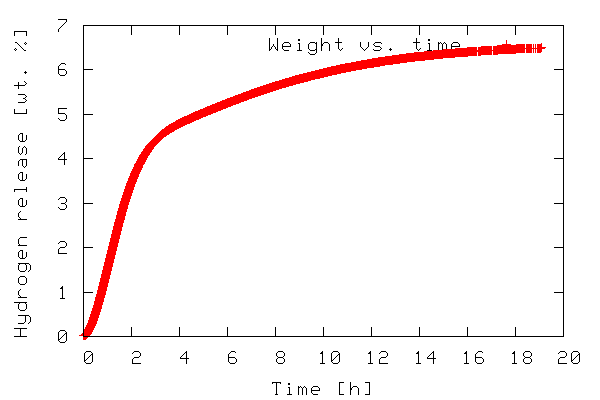
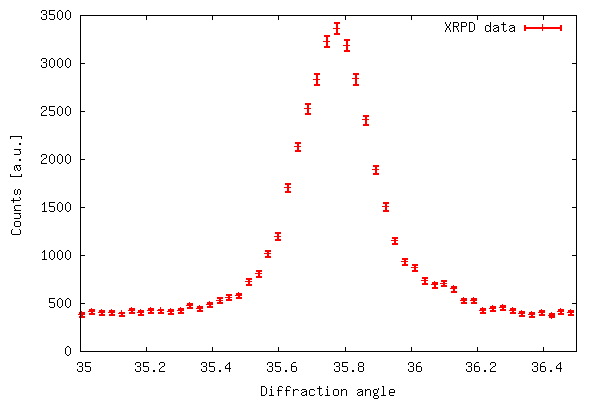
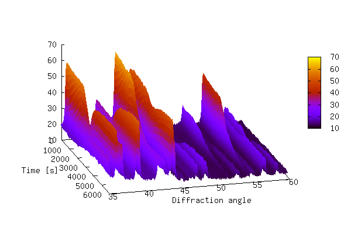

I'm hoping this will drum up some replies. I'm tumbling head-first into
the world of python and ncurses for this, and know very little about both.
To cut a long (and rather boring) story short, I run
irssi
in a screen
session on my poor P166 server. X11-forwarding is not an option as I
don't have nor want X11 installed, and it's damn slow even if I did.
But one useful feature is using one of the many scripts off of irssi's
website, I can get irssi to scrape urls into a text file. "Wooooo, I
hear you say".
Well, it is nice. And thanks to network transparency, I am able to tail
that logfile via shfs (ssh filesystem, essentially). So then I got to
thinking. What's an easy way of displaying the URLs in the file? I
remembered a program that ships (often) with mutt -- "urlview". It
scans a file for a regexp for URLs and presents a means of selecting
them and launching them. Brilliant. Except... it expects a file --
piping to stdin blocks.
Bah! I don't want to hack the source-code, unblocked I/O in C is a
headache. So I stumbled across pyurlview [1] a replacement written in
Python. It's "ok" and is in a language I can read.
What I'm wanting to do is emulate this:
tail -f ./some_file | pyurlview
Now that doesn't work as-is. So I thought about it a bit, and came up
with this little bit of python code (which I hope is the correct "way"
to do it):
#! /usr/bin/env python
import os,sys
while 1:
#sys.stdin.fileno()
s = sys.stdin.readline()
print "Got", s
Which seems to work when one does:
tail -f ./foo | testfile.py
So I thought I'd try and incorporate that idea into the pyurlview script
[1] I tried all I might, to no avail. The closest I got was here [2]
but that's mangling everything and isn't functioning like in the example
I correctly showed above.
So if someone can see the error in logic, do say. Or does anyone know
of an existing program that will do what I want? I can use any form of
scripting language to do it (awk, ruby, etc) already -- but it's more
the curses and non-blocking I/O I'm interested about. Plus, I'd rather
not reinvent the wheel, hence battling it out with python. maybe I
could use 'multitail' but it's UI sucks for what I am wanting.
I'm a novice as far as Linux goes and want to attend a course but don't
know which flavour to go for or who supplies the best training. From
what I have seen my choice should be between RedHat and SuSE..
When it comes to shell scripting I am a rank novice, but it seemed to me that the passage
"if $1 has a length of zero, then the following statements (echo... echo... exit) should be executed" (quotes not mine)
should read
"if $1 does not have a length of zero, then the following statements (echo... echo... exit) should be executed"
In fact, the article is correct - the
[ -z "$1" ] && { ... }
construct will execute the statement block if $1 is zero length; the
"-z" operator returns "true" in that case. You can try it on the command
line:
ben@Fenrir:~$ foo=abcdefg # Give some value to 'foo'
ben@Fenrir:~$ [ -z "$foo" ] && echo "Foo is empty"
ben@Fenrir:~$ foo= # Unset 'foo'
ben@Fenrir:~$ [ -z "$foo" ] && echo "Foo is empty"
Foo is empty
Thanks for the article,
You're welcome - glad you're enjoying it and thinking about it!
Re: [SEAPY] PyCon article
Fri, 8 Apr 2005 17:43:43 -0700 (MST)
Mike Orr (LG Contributing Editor)
Question by A group of Python users in Seattle (seattle-python from lists.seapig.org)
Just a quick note about the difference between "Voice recognition" and
"Speech recognition".
Voice recognition means recognizing "The person who is speaking". This
is a means of identifying people/persons by listening to their voice.
We all do this whenever we use the phone and know who is on the other
end as soon as they start talking.
Speech recognition means recognizing the words being spoken.
Voice recognition tools are used to identify people as part of access
security systems.
Speech recognition tools (Dragon Naturally Speaking, ViaVoice) are used
to "speak" into a computer microphone and have that computer understand
what words you said. Currently Naturally Speaking seems to hold the
edge in recognition accuracy. This can vary from person to person.
Janine's articles, [issue 113] Voice recognition shorthand and the
birth of Weblish and [issue 87] Linux-Based Voice Recognition
are actually about Speech recognition, not voice recognition.
--
Jeff Kinz, Emergent Research, Hudson, MA.
(A former Speech Recognition software developer)
Thanks for clarifying the distinction, Jeff; we'll pass this on to our
readers. I suspect that the common usage isn't likely to change much as
a result - but, to misquote Larry Wall, I do occasionally struggle
feebly against ignorance, and I admire other people's efforts in that
direction as well.
-- Ben
Hi, I am using debian unstable with firefox 1.0.2, I
try to use the
http://linuxgazette.net/cgi-bin/TWDT.pdb and put in
the issue number. but it always d/l issue 113 no
matter what I put in. I want to d/l the older issues
in palmdoc format, how do I do it? Thanks
[Ben]
Hi, Louis -
Well, being The Nice Guy that I am
, I've just tweaked the chunk of
CGI that generates that file to be a bit more flexible; what
you're asking for is now available. You can grab any past issue that
contains a TWDT.html in PalmDoc format by going to
where NAME is the name of the issue. Do note, however, that
Not all of the past LG issues have a TWDT.html (which is what's used to generate the PDB doc.)
Issues before #100 are actually called "issueXX", where 'XX' is a two-digit issue number (i.e., leading zeros for low numbers.)
To make it simpler, you can use any sort of a bogus string for NAME, and
you'll get a list of all issues with links that will return a PDB for
that issue. I hope that helps.
This page edited and maintained by the Editors of Linux Gazette HTML script maintained by Heather Stern of Starshine Technical Services, http://www.starshine.org/
The Answer Gang
Linux Gazette 114: The Answer Gang (TWDT)The Answer Gang 114:
...making Linux just a little more fun!
The Answer Gang By Jim Dennis, Jason Creighton, Chris G, Karl-Heinz, and...
(meet the Gang) ...
the Editors of Linux Gazette...
and
You!
We have guidelines for asking and answering questions. Linux questions only, please.
We make no guarantees about answers, but you can be anonymous on request. See also: The Answer Gang's
Knowledge Base
and the LGSearch Engine
Greetings, and welcome to summertime in the world of
Linux Gazette. As promised last month we've a few juicy bits for you; we hope you like them.
Got Questions?
We're seeing a drop in the number of good questions though. Or even bad ones. Jim (the Answer Guy himself) attributes this to all the good questions having already seen answers in past columns. This can't be completely the case - and on rare occasions the answers do change and why they had to is a juciy discussion. But there's certainly some grain of truth to it.
Ah, but that's not the topic I've planned to yak about for this month. Maybe in a later column, when The Answer Guy brings back his Retrospectives, I'll do a nice breakdown on how people find helpful friends these days. But I've been having a lot of fun (and even some clients) doing web glitz, so I'm probably going to talk about that next month. Send in your own tidbits of good web techniques, we'll make a pool of them.
Good Companions
I had spring cleaning last month, which means that this month there is room on my desk - and in my office - for some nifty things. Right now my lab's about to bloom with new power and color, as I bring machines from my internet lounge into gear. I haven't decided if I'll run them with full distros this time, a liveCD again as I usually do (Knoppix being the front runner), or as terminals served off one higher quality machine, in the same spirit that the K-12 LTSP people do. One way or another it's bound to be a fun time at Baycon again this year, as my starship gets a Piece O' Da Action. I should invite our Editor In Dark Glasses along, and see if the ladies who fly the black helicopters are inclined to TAG along...
My teddybear now has a permanent place of honor on my FVWM desktop. If you've been paying attention you've got a copy of him in your /usr/share/xteddy directory too, from our February cover art and perhaps he brightens your day. Thomas gave me a rather sweet birthday present that I hadn't gotten around to showing you folks - note, this is very specific to FVWM, and you have to name your bear correctly, too.
First, you symlink xteddy to the name bear so the window title will be seperate.
Second, add this fragment to your .fvwm2rc. It's kind of important to advise FVWM that he accepts WM hints:
Third, I added a little bit to my fvwm's StartFunction which makes sure that bear's on my desktop. You'll probably have the geometry a little different - have fun with it...
AddToFunc StartFunction
+ I Test (init) Exec exec /usr/bin/fvwm-root /home/heather/.fvwm/stars16a.xpm
+ I Test (init) Exec exec bear -wm -geometry +1320+820
Now anytime I press Shift-Alt-B he bounces. The only mystery I haven't solved - feel free to send in if you're a fvwm fan who knows the answer - is that if I have clicked him, say to drag him out of the way momentarily - then he won't bounce anymore, until I've minimized him. then his minimized form bounces fine, and so does his restored form. Pretty silly seeing the word with no picture bounce like that. It makes me giggle.
I hope you're enjoying a happy Summer. As for me, it's too bright out there, time to go hide in my starfields for awhile. Stargazing fans, the skies are clear, and there's plenty of software to tell us what to look for. In the realm of spaceward travels, things are... if you'll pardon the expression... looking up. Bye now!
it has been more than 4 years that I am reading (and sometimes
publishing in) the Linux Gazette with real pleasure. I always did find
most answers to my questions here but this time I'm really stuck.
From time to time I use the Xnest command to connect to remote boxes
with graphical login.
This works much as expected except for one thing: I'm used to a german
keyboard layout and my local X server is configured to use it. But Xnest
does not use it - I always get US keyboard layout inside Xnest.
For example I tried:
$ Xnest :1 -broadcast -xkbmap de -geometry 980x680
Cannot open "keymap/de" for reading
(EE) Error opening keymap file de, reverting to defaults
for example but I got above error and still only got a US keyboard
inside. The rest was working as expected.
Another try was something like this:
$ Xnest :1 -broadcast -xkbmap /etc/X11/xkb/keymap/xfree86 -geometry 980x680
Cannot open "keymap/etc/X11/xkb/keymap/xfree86" for reading
The XKEYBOARD keymap compiler (xkbcomp) reports:
> Error: Cannot open
"/var/tmp/etc/X11/xkb/keymap/xfree86.xkm" to write keyboard description
> Exiting
(EE) Couldn't load XKB keymap, falling back to pre-XKB keymap
(EE) Error opening keymap file /etc/X11/xkb/keymap/xfree86, reverting to
defaults
The main question is: how do I need to call/configure Xnest that it will
use my german keyboard setup inside the Xnest window so that I can use
remote applications with my german keyboard?
I'm using SuSE Linux 9.1 with XFree86 Version 4.3.99.902 (4.4.0 RC 2)
and the according version of Xnest.
[Thomas]
The problem you have, Matthias, is that Xnest does not support the
-xkbmap inherently. Yes, although Xnest will emulate a server, at
present Xnest is only capable of using its own default keyboard
extension map.
You have to remember that Xnest is a complex program. To the Xserver
and indeed any other Xclient, it looks and behaves as such (it looks
like an Xserver to the underlying real Xserver, and as an Xclient to the
windows mapped to it) [1]. The reason why the -xkbmap is ignored is
because when Xnest loads, it changes the keyboard layout procedures of
the real server to its own defaults [2]. Currently there is no pure
workaround, other than you might be able to use Xmodmap from within
Xnest to change it (or possibly Xkeycaps).
I realise I've been vague about some points, but this is a really
complex issue that I might (if the interest is high enough) turn into an
article or TAG entry.
This has several inherent problems, that I'll skip.
To many people, this is complex to work around -- but think about. Xnest is both an Xclient and an Xserver (in this sense). The kdb extensions are inherently supplied and then dropped by the real Xserver. It's a transparent process only.
Question about file mtime on linux
From Suramya Tomar
Answered By: Benjamin Okopnik, Pete Jewell, John Karnes, Mike Orr, Jay R. Ashworth, Kapil
Hari Paranjape
Hi Everyone,
I have a question for you about file mtime(modify
time) on linux. Does the mtime stamp of a file change
as soon as a process starts modifying the file or does
it change it after the change is done?
[Ben]
After the change is done, of course; up until that time, the file has
only been read, not written to. What is modified (in e.g., an editor)
is a copy of the file, generally held in memory - which is why the
"save" function exists. Otherwise, a crash in the middle of editing
would destroy your original file.
The reason I am interested in this is that I am
writing a perl script which is supposed to monitor a
file for changes and as soon as the change is done run
another script which processes the changed file. I
don't want the second script to run before the file change is
complete(Which would happen if the mtime changes as
soon as the modification starts).
So how would I check that the file change is done?One
way would be to keep checking in a loop if the mtime
changed if it did goto sleep and check again after a
few seconds, keep repeating this until the mtime stop
changing. But in my opinion this is a stupid way of
doing this so I am hoping one of you has a better way
of doing it.
[Kapil]
File locking might be useful. The script sees the change in the mtime,
then waits for the lock to go away and starts processing. You would
have to tell the modifying program to use file locking though.
[Sluggo]
I would agree to use the kernel monitor first. But for alternatives...
Why not have the first process send the second process a signal when it's
done? Put the observing process in indefinate sleep, and have the
write process send a SIGALRM (Alarm) to kick it. You'd prob'ly want to
put the observer's PID in a well-known file so the other process can find
it.
Or use file locking. The writer holds a write lock till it's done. The
observer sees the mtime change and acquires a read lock. The read lock
blocks until the write lock has released.
If you really want to know when the mtime is set, look in the kernel
source. or the libc source, and see what fwrite() does. That's one of
the advantages of open-source software. Even if you don't know much C,
you can still tell whether the word "mtime" appears above or below a
write() call.
Or just think about why most programs don't have to worry about this.
Unix programs tend to open-write-close quickly, and close the file when
they don't need it. (As opposed to Windows text editors, which often hold
the file open the whole time.) Unless the program has to hold the file
open for a long time (e.g., streaming log entries), your chances of
hitting the file in the middle of an update are pretty slim. Then think
about, what's the worst that would happen if you did? Your observer would
produce garbled output, with part of one version and part of another. Or
maybe it would crash. Would this be the end of the world or a minor
inconvenience? At least it would tell you how (in)frequently such a
collision is occurring.
[Pete]
From past experience I seem to remember that the only 'pure perl' way to
ensure that a file is not being modified, without relying on file locks,
is to check the size/mtime of the file, wait a bit, and then check it
again, repeat until the two size/mtimes are the same.
The reason I ran into this was because I was writing a routine to process
a file after it had been uploaded to an ftp server. In the end, because
we had control over the ftp server, we configured it so that the uploader
and my routine both logged into the ftp server using the same username,
and restricted the number of times a user could concurrently login to 1.
This did the trick quite nicely.
A good resource for perl questions is the Perl Monks website
http://www.perlmonks.org - in fact I would go so far as to say that it is
the best resource for perl information on the web.
[Ben]
[grin] Multiple xterms are useful for this. In one of them, run this
program:
where "foo" is the file you're looking at; this will print the mtime of
'foo' once a second. In another xterm, open 'foo' and modify to your
heart's content - all the while glancing at the first term. Nice and
easy.
[John Karns]
How about making a call to 'lsof' to see if the file is open?
I'm not sure if a latency in the kernel flushing disk buffers would be a
concern in this kind of scenario. If so, you might want to have either
one of the processes make a call to flush the buffers to ensure that there
is not a pending update to the file.
In fact I've sometimes wondered about this myself: if there is a pending
write to a file via a dirty buffer, is that automatically taken into
account if I read the file before the buffer is flushed? I.e., is the
pending change transparently mapped to a read of the file by libc or
whatever?
[Sluggo]
It would be a very severe bug if it didn't read from the buffer, since
that's the official version currently. I've sometimes wondered this
myself, but I've found the kernel developers pretty trustworthy so I
assumed they wouldn't do such a thing.
[Jay]
It seems to me that the kernel should update the mtime in the inode (as
the inode is transparently cached in RAM) *everytime a write(1) call is
made to the file*.
So, at this point, your question expands to "if someone makes a write
call which takes a finite amount of realtime to execute (like, writing
1MB from a RAM buffer to a file), at which end of the execution of that
write call will the inode get updated?"
IANAKH, but I believe the pertinent code is in kernel/fs/$FILESYS/file.c
As you can see when the copy started the numbers
started changing. So now we know that the mtime keeps
changing when the file is being modified. And if you
think about it, it makes sense: The mtime changes
whenever any changes are made to the inode's used by
the file so when the file is being created new inodes
are being used constantly so the mtime has to change.
Now I will be looking into the other suggestions you
guys made and see if I can get this to work. (And no
this is not a school project
) I need to export
data from an oracle DB to a CSV file and have another
script read this CSV file and process it. If the
second script reads a half written file 'Bad Things'
(TM) will happen.
[Pete]
If that's the case, then a low tech solution might suffice. Write your
CSV file out from oracle as something like 'temp_output.csv', and then
have your oracle process rename the file once it's fully exported. Then
your perl script is only looking for the renamed file, instead of trying
to guess when the file creation is complete.
[Ben]
Oh, nice solution, Pete! You could even follow the (more or less)
standard practice of "building" the file in a temp dir, then moving it
into the location from which it should be copied. As long as the temp
and the final locations are on the same partition, that's just a matter
of changing the inode info - which is an atomic op, so there's no chance
of retrieving a partial file.
Thanks a lot. This solution works perfectly for my task. Makes my life a
lot simpler too :)
But I'm often confused as to what "the other half does". For
example, I am now using "fvwm" (thanks to Thomas' suggestions on how
to ratpoison-ify it). I know that "fvwm" traps some keys
and uses them for its own nefarious purposes.
[Thomas]
Key-bindings as set by the user for the window manager are always greedy
with respect to the window manager. So for instance, in FVWM, one might
have a key-binding such as:
Key X A 3 Function FvwmTitleRxvt
Now, of course, it might be the case that windowskey+X is an actual
binding to an application I have running, but it's tough -- the WM has
precedence in that binding as I have it defined there.
What happens when it is used with GNOME? Who is gets the first option
to look at the keys or other input events? GNOME or fvwm?
[Thomas]
Always the window manager. Remember that GNOME is just a framework and
a collection of utilities. If you wanted a hierarchy, a depiction such
as the following is an accurate representation:
GNOME <--> window manager --> Application
Of course, the integration aspect of GNOME <--> Window Manager how
depends on EWMH. I've talked about these in the past, but I might as
well summarise them here for clarity. EWMHs are extensions from window
states which were first outlined by the ICCCM manual [1]. Unfortunately,
the ICCCM is rather old, but it does provide a fantastic framework on
which to build a WM, and it is still very relevant today. When KDE and
GNOME were developing into the bloatware we see today, one thing they
both did were to extend the ICCCM to define their own window states. Of
course, compatability became a nightmare in such instances, and so these
were cleaned up and standardised by the freedesktop people [2]. They're
only windowing hints at the end of the day for things such as 'Working
areas', 'Number of Desktops', and such like.
You may ask why the WM has precedence over an application, when it is
the job of the WM to manage applications. The answer is simple.
Key-bindings are the job of the Xserver. So actually the propogation
looks like this:
Xserver -> Window Manager -> Application.
When you get your window manager to bind your keys for you, what's
actually happening is that the window manager will map the requests
itself, so it keeps a record of WM-specific keybindings. When the WM
grabs the Xserver when it maps an application or a key-binding it then
checks to see (via the Xserver) whether that keybinding is WM-defined or
not. If it is then it will act appropriately, else it will pass it
down to the underlying application, or do nothing.
A similar question could be raised regarding how window positioning
and decorations are decided/executed. Perhaps the overall GNOME/GTK
theme decides and passes on the info to the window manager which
actually executes these?
[Thomas]
Not quite. GTK itself is window manager agnostic. When you apply a
GTK-theme, all that happens is that any currently running GTK apps are
redrawn by the Xserver. There is no interaction with the window manager
in anyway while this is happening.
Of course, GTK themes don't really allow for the stylation of title bars
-- that's the job of the WM, and rightly so. You have to remember
thatit's the job of the xserver to map the window which the WM then
grabs and decorates as it sees fit. So the decoration could come in any
form.
Window positioning is a separate entity in itself. When windows are
mapped to the Xserver, the server will naturally map it to 0+0 which is
top-left. The window manager already has one window that is top-level,
and that is the root-window. This is the ultimate window from which
everything else stems from, when windows are created. Consider the
following Xlib snippet:
I could easily spend hours talking about this line of Xlib alone, but
I'll save you the gory details. Essentially, the point you should
realise is that all windows created in this way [3] are always a child
of the root-window. Why? Well, it's all about management. Once the Wm
knows the top-level window, it knows how to stack windows as well as
place hints on them. Of course, the WM is not allowed to change
application-set windowing hints when the window is being mapped.
Indeed, this is really where 'xprop(1)' comes in useful. This allows
one to examine all of the window states as well as set them. There's
also 'xwininfo(1)' for a more high-level view, although to be honest, I
prefer FvwmIdent for such things.
Of course, with window hierarchies comes the notion of Transient
windows. These are (by definition) short-lived windows, such as dialog
boxes. They'll often have the the following hint set:
[n6tadam@station ~]$ xprop | grep -i trans
WM_TRANSIENT_FOR(WINDOW): window id # 0x2a0002e
The window manager might well treat these differently -- indeed, FVWM
does. Due to their short-lived nature, it's often not desireable to
have all buttons on the titlebar, so FVWM might well not decorate
transient windows in such a manner. Of course, one can change that
with:
Style * DecorateTransient
Anyway, window positioning is managed by the window manager. The
geometry of a window defines its position on screen, and hence its size.
In the form:
widthx height+/- xorigin+/- yorigin
Note that the window geometry will often be with respect the actual
window itself, and not the frame that surrounds it. In slight relation
to that is a window gravity. There's 'Window Gravity' and 'Bit
Gravity', and they specify for the window as a whole (including the
borders) and the window contents how to react on window resizing.
Of course, as you have no doubt guessed, it is not quite as simple as
-geometry. There is certain other hints that provide additional
positioning. Take for instance Mozilla. That doesn't have a
'-geometry' option because of they way it was designed. Instead that
remembers its position (and hence window size) each time it is closed.
The WM can be instructed to ignore or react to such things. As is the
case with FVWM there's a hint called 'NoPPosition'. This instructs FVWM
to place the window based on what/where it tells the WM to put it.
Hence:
Style gecko NoPPosition
would be such an example [4]. There are instances though where a window
will use PPosition hints as well as accept geometries. Notably,
[X]emacs is such a beast and will set its PPosition to (0,0) each time,
so overriding that is paramount for some.
Again, geometry
specifications take precedence over PPosition hints where they're
supported.
A pointer to relevant sources of information would be greatly
appreciated.
[Thomas]
I hope this helps. I could rabbit on for ages about all of this, but
I'd rather answer such things as they come up, as opposed to overloading
you with tedious information. Unfortunately, information such as this
is sparse, and represents my understanding through working with FVWM,
and Xlib in general.
Of course, it doesn't have to be at the low-level such as Xlib. Often, languages have wrapper functions around XCreateSimpleWindow() which will automatically map a window to be a child of the root window.
Thanks for the detailed write-up. Any chance that this will one day
become an article somewhere? (Hint! Hint!).
Great stuff.
This question was raised about a specific window flag. I've split it out from
the above commentry to keep readability intact.
-- Thomas Adam
[Thomas]
Of course, as you have no doubt guessed, it is not quite as simple as
-geometry. There is certain other hints that provide additional
positioning. Take for instance Mozilla. That doesn't have a
'-geometry' option because of they way it was designed. Instead that
remembers its position (and hence window size) each time it is closed.
[Ben]
Oh, how I wish it did.
Not a big thing, but this has been a
long-standing problem with Mozilla for me (both the Big Moz and now
Firefox): Due to couple of info bars that I use (MailDooHicky and the
Moaning Goat Meter),I like for my windows to span from the left edge of
the screen to ~100px short of the right edge, and from ~30px down from
the top to ~30px short of the bottom. Xterms are, of course, no problem
- I've got "XTerm*VT100*geometry: 134x40+0+21" in my ~/.Xresources, and
that takes care of it. Mozilla, well... I've got a little Java
bookmarklet on the toolbar that makes it jump to the correct position
whenever I find it too annoying. But it never remembers the position.
[Thomas]
It does work, but it's dependant on how the window manager deals with
such things. I have to say that some WMs are better than others in this
regard. It has been many years since I used icewm for any serious use,
but as far as I can recall, it doesn't allow for arbitrary commands to
be run on a window.
[Ben]
Eh, well... for certain values of 'arbitrary'... kinda sorta. :)
You can't (so far as I know, at least) run commands on a window once
it's up. You can, however, assign initial properties to windows
(actually, your discussion of all this stuff is what I needed to remind
me of that - thanks!) by defining them in ~/.icewm/winoptions; in this
case, what I needed was:
Gecko.Firefox-bin.geometry: 1212x722+0+23
This sets the initial position of the window to what I need, which is
perfect.
[Thomas]
I hate to err, draw comparisons.
[Ben]
No you don't.
C'mon, you love to tout the superiority of FVWM! (And
why not? If it can do something better than everybody else, go for it.
After all, it's not boasting if you can do it.)
[Thomas]
In FVWM, doing what you're
describing above can be achieved in two ways, the first is to use a
function, as in:
DestroyFunc FuncStartMoveBrowser
AddToFunc FuncStartMoveBrowser
+ I Exec exec $0
+ I Wait $0
+ I Next ($0) ResizeMove w+0 -100px 0 -30p
(I've most likely got the co-ordinates wrong, but that can be left as an
exercise to the reader).
So the above will exec the first formal argument to the function ($0),
wait for it to appear, and then will move and resize it to the said
co-ordinates. You might invoke it thus:
FuncStartMoveBrowser mozilla
One would replace 'mozila' with whatever program was wanted. But there
are limitations with that method. The first one is that it will only
work when invoked from within a menu, or FvwmConsole, and won't work if
one were to type in 'mozilla' from an Xterm. In such cases where this
is more desirable, FvwmEvent can be used, as in:
DestroyModuleConfig FvwmEvent-Browser: *
*FvwmEvent-Browser: Cmd Function
*FvwmEvent-Browser: add_window FuncStartMoveBrowser
Which would set up an event for each window that was created, calling
the function specified. The function as we have it defined needs
modifying for use with FvwmEvent, as the window would have already been
created, hence:
DestroyFunc FuncStartMoveBrowser
AddToFunc FuncStartMoveBrowser
+ I All (CurrentDesk, AcceptsFocus, !Transient) ThisWindow ("gecko") ResizeMove w+0 -100px 0 -30p
I've used 'gecko' as that is the window class common to both Mozilla and
Firefox.
You're probably wondering how this helps you, Ben. It doesn't, but
there is an application which can move and resize windows which you
could make use of, coupled with xwininfo(1). It's called 'xwit' and is
just a wrapper program around some of the Xlib functions, so for
example:
xwit -move x y -resize x y -names 'mozilla'
If you wanted to get specific, you could use xwininfo to fine tune
things, matching by window ID, etc. Maybe a little crude, but it might
help you.
[Ben]
[laugh] Well... it's got this little problem built in...
Since Firefox changes its window name to whatever the site happens to
be, I have to click the Firefox window in order to find out its window
ID (which could then be used to do 'xwit' twiddling.) This is, shall we
say, suboptimal for the task.
I'd imagine there are other ways to
hunt it down - 'xwininfo -all -root|grep Mozilla' comes to mind - but
that gets a bit shaky. Anyway, you've avalanched some synapses for
me, the appropriate brain cells fired, and All Is Now Well.
Thanks!
[Thomas]
No worries. You can probably get a fairly accurate result in making use
of '-root' to xwininfo, so something like:
At least with it displayed in a tree form (and stopping at the first
match), you can be fairly well assurred that you'll be matching the
parent window.
icewm light weight desktop
From Jpydeep Bakshi
Answered By: Chris Gianakopoulos, Benjamin Okopnik, Adam Engel, Thomas Adam
Hi all,
I am totally shifted to icewm and I am a newbie on this icewm. that's why I am
asking some questions, may be very basic to you all but I don't have much
knowledge about it.
1) is it possible to get a customised menu where I'll have some very
frequently accessed entries like sylpheed-claws, mplayer etc and nothing
else ?
2) how to create shortcuts on desktop ?
[Thomas]
Use a program such as rox-filer [1] or 'idesk' (search LG.net for that
one, there was an article about it not so long ago). You're also
suffering from a fundamental lack of understanding about what a desktop
environment is, and what a window manager is. I'm not going to cover it
here again - see any of the recent LG releases within the last six
months. Essentially the term "desktop" isn't. It's just the
root-window.
I'll definitely go through those article. what window manager do you use?
Now a million-dollar question. is it practically possible to run
K-desktop environment on xfce or icewm window manager ? if possible
then how ? I am too much interested to do such an experiment.
[Thomas]
You clearly don't pay enough attention to reading the LG, if at all. :)
[2,3]. I suppose you ought to read the recent TAG entries as well [4,5,6].
Only where those window managers are EWMH compliant [3], for which icewm
seems to be. This allows things like the kde kicker and gnome's taskbar
to be handled correctly from the window manager that will run 'inside'
of the KDE or GNOME environment. Effectively this process is using
Session Management [2], although in reading that, you would need to
replace the current running window manager in GNOME with icewm. You
can't use "icewm --replace" as that's specific to FVWM, hence you should
use:
killall metacity && sleep 1 && icewm &
Then you'd have to save your session before you logged out (via
gnome-session-properties). I have to say that I absolutely hate
session managers. I can't stand them. They're terrible at what they do
and what they do, is second rate.
If you want to use KDE instead, the process can get a bit trickier -
I have heard rumours of the use of candles and goats, but....
KDE is started via the 'startkde' script. If you edit that script what
you might see is a line such as:
ksmserver
which starts the window manager (kwin by default). To start fvwm you
should add the option "-w icewm" to the ksmserver line, and save the
file. On typing 'startkde' this should then launch icewm as the window
manager of choice.
Of course, all of this is theory - I don't use icewm so I am just
applying what I already know.
[Ben]
Thomas already mentioned that you're suffering from a bit of confusion
in this regard. You don't "create shortcuts on desktop"; you run an
application that allows you to create clickable icons linked to
applications. My favorite is "coolicon", which is available as a
standard Debian package; it does not come with particularly exciting
icons - but you can use any XPM image as an icon, and it's very
flexible, powerful, and lightweight.
You can also create clickable links on the IceWM toolbar - here's my
~/.icewm/toolbar file as an example:
The first string after "prog" is the 'hover label' for the icon, the
second one is the 16x16 XPM image to be used, and the third one is the
program to execute. Simple and easy.
Furthermore, IceWM allows you to associate programs with other toolbar
entities (the mail notification icon, the CPU activity icon, the clock,
etc.) See the "preferences" file - same locations as the "menu" file -
and search for the word 'Command' (the variables will be MailCommand,
ClockCommand, etc.)
3) how to add wallpaper ?
[Ben]
You can use "icewmbg", or just use the standard X commands (i.e., "xsetbg").
4) can I add application-button, applet to panel which I could do in KDE ?
[Ben]
I think you're asking about toolbar buttons - which I've answered above.
[Chris]
I'm an icewm boy. I can answer two of your questions. In your home
directory, once you save your preferences with the program called
'icepref', you will have a directory called .icewm. There will be a
file called preferences.
For a background image (wallpaper), set the following line:
DesktopBackgroundImage="myfile.jpg"
In this case, a jpeg file will represent your wallpaper.
I have attached another file in that directory called programs. It
represents your menu items. The file that I have included is the one
that I use. Modify this as you like. In it you will see menu entries,
and within each menu entry, you will see prog entries. The prog entries
are the selections within each menu.
Actually, I have attached both (preferences and programs) files. If you
don't have icepref, just create the directory .icewm in your home
directory, and copy the attached files into that new directory.
[Adam]
If you're using a Desktop Environment like KDE or GNOME, why do you
need a win manager at all, except to literally "manage windows;" that
is, what's the difference between Metacity or Icewm or Sawfish if you're
already using GNOME with all it's icons, menus, etc.
[Thomas]
Because KDEs and GNOMEs framework are such that you can use different
window managers within them as long as they're EWMH-compliant. It just
so happens that GNOME uses metacity now as its window manager or choice.
Before that, it was sawfish.
[Adam]
As "stand-alone"
win managers, sawfish and metacity don't seem to do much (on my system)
-- as compared to window maker or enlightentment or fvwm etc -- yet
sawfish and metacity are the "window managers" of GNOME, which doesn't,
as far as I know, have a win manager of its own.
[Thomas]
That's right, it doesn't. It's allowed for the choice to be down to the
user. Of course, most don't bother changing it, because the options
that GNOME gives them aren't dependant on the window manager being used,
but rather how GTK will react to those events; in the same way that the
options GNOME allows for affect the gpanel, etc.
[Adam]
I don't understand the relationship of a window manager, such as sawfish,
to a full desktop environment such as GNOME. If I want to go with a
window manager, I use window maker or enlightenment and customize it,
otherwise, I use KDE or GNOME for the "desktop experience." Can anybody
explain what the relationship between a window manager and a Desktop
Environment like GNOME?
[Thomas]
See above -- it's only one half of the equation.
Submitters, send your News Bytes items in
PLAIN TEXT
format. Other formats may be rejected without reading. You have been
warned! A one- or two-paragraph summary plus URL gets you a better
announcement than an entire press release. Submit items to
bytes@lists.linuxgazette.net
Legislation and More Legislation
Software Patents
Following the European Council of Ministers' decision to
discard Parliament's amendments,
the legislative process continues.
The
FFII
has
reported
the publication of
the report by Michel Rocard, European Parliament
rapporteur,
on software patents. The findings and recommendations
in the report have been welcomed by FFII president
Hartmut Pilch.
FFII has also
published a recording and some transcripts
from the JURI meeting at which the rapporteur's findings
were presented.
Although, currently, campaigning for the European
Constitution referenda is dominating European politics at
the moment, the importance of contacting your MEPs on this
matter should not be underestimated. Only by paying
attention to their actions, and calling them to account for
them (whatever your personal views), can citizens begin to
reduce the democratic deficit manifest in EU institutions.
Over the years we've seen a number of heated arguments
among the members of the Linux kernel project. Favourites
among these have included the debates over preemption
strategies and discussions of how to manage memory most
effectively. A repeated focus for acrimonious discussion
has been Linus's choice of source-management
tool:
BitKeeper.
The selection of a proprietary piece of software for this
fundamental part of the development infrastructure has rankled
many of the more idealistic open-source/free-software
purists in the development community.
This issue came to major prominence in the past month, as
Andrew Tridgell publicly revealed that he had reverse
engineered the BitKeeper protocol to allow developers to
obtain project meta-data from the repository.
On seeing this, the lead-developer of BitKeeper, Larry McVoy,
responded by revoking the free BitKeeper licences that have
been used by kernel developers since the tool was adopted by
the project.
This sequence of events drew the ire of
Linus Torvalds,
who accused Tridgell
of acting irresponsibly and
jeopardising an effective and working system without
offering any alternative. Others in the free software
community, such as
Bruce Perens, see these criticisms as unjustified, and
point out that Tridgell was essentially engaged in the same
type of activity that allowed him to develop
Samba.
An interesting aside to consider is
the response of the Subversion project to discussion
among users that Subversion might be a suitable BitKeeeper
replacement. Highlighting the difficulties in achieving a
compromise between Linux development practice and the
current Subversion feature-set, attention was instead
briefly focussed on three new version control systems that
have emerged in the past year or two
MonotoneGNU Arch
and
SVK. All three of
these support the use of distributed repositories, and have
recently been gaining popularity.
Ubuntu
has released a new edition of its popular, Debian-based,
GNU/Linux distribution.
Ubuntu 5.04, (The Hoary Hedgehog Release)
is in the wild and
ready for download.
In parallel with this,
The Kubuntu project has released Kubuntu 5.04 (Ubuntu
combined with the latest KDE goodness).
The Apache Project has announced the release of the newest
version of its omnipresent web-server software.
Apache HTTP Server 2.0.54,
now available for download, is principally a bug fix
release.
Not directly Linux related, but surely of interest to most
Unix-like system admins (or should that be admins of
Unix-like systems!), O'Reilly has recently released a new
title focussing on security issues and techniques on BSD
systems:
Mastering FreeBSD and OpenBSD Security.
Mick is LG's News Bytes Editor.
Originally hailing from Ireland, Michael is currently living in Baden,
Switzerland. There he works with ABB Corporate Research as a
Marie-Curie fellow, developing software for the simulation and design
of electrical power-systems equipment.
Before this, Michael worked as a lecturer in the Department of
Mechanical Engineering, University College Dublin; the same
institution that awarded him his PhD. The topic of this PhD research
was the use of Lamb waves in nondestructive testing. GNU/Linux has
been very useful in his past work, and Michael has a strong interest
in applying free software solutions to other problems in engineering.
Python for scientific use. Part I: Data Visualization
A first step towards qualitative understanding and
interpretation of scientific data is visualization of the data.
Also, in order to reach a quantitative understanding, the data
needs to be analyzed, e.g. by fitting a physical model to the data.
The raw data may also require some initial processing in order to
become useful, e.g. filtering, scaling, calibration etc.
Several open source programs for data analysis and visualization
exist: gnuplot, grace, octave, R, and scigraphica. Each of
these has its own pros and cons. However, it seems like you always
end up using more than one program to cover all the different needs
mentioned above, at least if you don't have the programming
abilities to write your own custom programs using e.g., Fortran or
C.
Recently, I came across Python and found it to be a very
powerful tool. In this article, I would like to share my experience
and illustrate that even with basic (or less) programming skills it
is still possible to create some very useful applications for data
analysis and visualization using this language. The article is
centered around a few illustrative examples and covers the
visualization part — data analysis will be covered in a
future article.
Python: a brief review
Python was originally created by Guido van Rossum and is an
interpreted programming language (like e.g. Perl) with a clear and
easy-to-read syntax. You can write stand-alone applications with
Python, but one of it's strengths is its ability to act as glue
between different kinds of programs.
The standard introduction to any programming language is the
Hello world! program. In Python this is generated by first
opening the Python interpreter by typing python on the
command line. Your screen should look something like this:
Python 2.3.4 (#1, Jan 21 2005, 11:24:24)
[GCC 3.3.3 20040412 (Gentoo Linux 3.3.3-r6, ssp-3.3.2-2, pie-8.7.6)] on linux2
Type "help", "copyright", "credits" or "license" for more information.
>>>
Then the following code is typed:
print "Hello world!"
Python code can also be stored in a file e.g. named
script.py. By convention, files containing python code
have a *.py extension. The script can be executed by
typing python script.py on the command line. The
program output will then be written to stdout and appear on the
screen. If the following line is added to the top of the file:
#! /usr/bin/python
(assuming that the python executable or a symlink to it exists)
and giving the file executable mode with chmod u+x
script.py the script can be executed by typing
./script.py on the command line.
Python comes with many modules, either built-in or available for
separate download and installation. In this article we will use
SciPy, which is a very powerful
library of modules for data visualization, manipulation and
analysis. It adds functionality to Python making it comparable to
e.g. octave and matlab.
Plotting 2-D data
Example 1: Plotting x,y data
The first example illustrates plotting a 2-D dataset. The data
to be plotted is included in the file tgdata.dat and represents weight
loss (in wt. %) as a function of time. The plotting routine is in
the file tgdata.py and
the python code is listed below. Line numbers have been added for
readability.
1 from scipy import *
2
3 data=io.array_import.read_array('tgdata.dat')
4 plotfile='tgdata.png'
5
6 gplt.plot(data[:,0],data[:,1],'title "Weight vs. time" with points')
7 gplt.xtitle('Time [h]')
8 gplt.ytitle('Hydrogen release [wt. %]')
9 gplt.grid("off")
10 gplt.output(plotfile,'png medium transparent picsize 600 400')
To run the code, download the tgdata.py.txt file, rename it
to tgdata.py, and run it with python
tgdata.py. Besides Python, you also need SciPy and gnuplot
installed. Gnuplot version 4.0 was used throughout this article.
The output of the program is a plot to screen as shown below.
The plot is also saved to disk as tgdata.png per line
4 above.

In line 1, everything from the SciPy module is imported. In order
to make use of the various functions of a module, the module needs
to be imported by adding an import module-name line to
the the python script. In this case it might have been sufficient
to import only the gplt package and the
io.array_import package. In line 3 the
io.array_import package is used to import the data
file tgdata.dat into the variable called
data as an array with the independent variable stored
in column 0 (note that array indices start with 0 as in C unlike
Fortran/Octave/Matlab where it starts at 1) and the dependent
variable in column 1. In line 4 a variable containing the file name
(a string) to which the plot should be stored. In line 6-10 the
gplt package is used as an interface to drive gnuplot.
Line 6 tells gnuplot to use column 0 as x-values and column 1 as
y-values. The notation data[:,0] means: use/print all
rows in column 0. On the other hand data[0,:] refers
to all columns in the first row.
The gnuplot png option picsize can be a little
tricky. The example shown above works when Gnuplot is built with
libpng + zlib. If you have Gnuplot built with
libgd the required syntax becomes size
and the specified width and height should be comma separated.
In order to plot a file with a different file name, we have to
open the python source in a text editor and manually change the
name of the file to be imported. We also need to change the name of
the file copy if we do not want to overwrite the previous plot.
This is a little tedious. We can easily add this functionality to
our python script by allowing filenames to be passed as command
line arguments. The modified script is called tgdata1.py and is shown
below.
1 import sys, glob
2 from scipy import *
3
4 plotfile = 'plot.png'
5
6 if len(sys.argv) > 2:
7 plotfile = sys.argv[2]
8 if len(sys.argv) > 1:
9 datafile = sys.argv[1]
10 else:
11 print "No data file name given. Please enter"
12 datafile = raw_input("-> ")
13 if len(sys.argv) <= 2:
14 print "No output file specified using default (plot.png)"
15 if len(glob.glob(datafile))==0:
16 print "Data file %s not found. Exiting" % datafile
17 sys.exit()
18
19 data=io.array_import.read_array(datafile)
20
21 gplt.plot(data[:,0],data[:,1],'title "Weight vs. time" with points')
22 gplt.xtitle('Time [h]')
23 gplt.ytitle('Hydrogen release [wt. %]')
24 gplt.grid("off")
25 gplt.output(plotfile,'png medium transparent picsize 600 400')
In the first line we have imported two new modules —
sys and glob — in order to add the
desired flexibility. In Python, sys.argv contains the
command line arguments when execution starts.
sys.argv[0] contains the filename of the python script
executed, sys.argv[1] contains the first command line
argument, sys.argv[2] contains the second command line
argument and so on. The glob.glob() function behaves
as ls in *nix environments in that it supplies
filename wildcarding. If no matches are found it returns the empty
list (and thus has a len() of zero), otherwise it contains a list
of matching filenames. The script can be executed with any desired
number of command line arguments. If executed with two arguments
e.g. python tgdata1.py tgdata.dat tgdata1.png the
first argument is the name of the file containing the data to be
plotted, and the second argument is the desired name of the file
copy of the plot.
The script works as follows. A default file name for the hard
copy of the plot is stored in the variable plotfile
(line 4). Then some conditions about the number of given command
line arguments are checked. First, if two or more command line
arguments are given plotfile is overwritten with
argument no. 2 (line 6-7.) Any arguments after the second are
silently ignored. For 1 or more arguments given argument 1 is used
as the data file name (line 8-9). If no command line arguments are
passed, the user is prompted to input the name of the data file
(line 10-12). In case of an invalid file name being used for the
data file the script prints an error message and exits.
Example 2: Plotting x,y data with error bars
So far we have shown that the gplt package is easy
to interface with gnuplot and very effective. However, for
scientific use it is often desirable to represent uncertainties for
each data point. Although this is possible in gnuplot the
gplt interface lacks this functionality. Instead we
use the popen package included in the os
module. With popen it is possible connect to the stdin
(or stdout) of a program through a pipe.
The code below (also available in xrddata.py.txt, the data file
is available as xrddata.dat) more or less shows
how example 1 is reproduced using popen instead of the
gplt package. The major difference is the fact that
with popen it is not necessary to import the data to
be plotted into Python - instead it is read directly by
gnuplot.
1 import os
2
3 DATAFILE='xrddata.dat'
4 PLOTFILE='xrddata.png'
5 LOWER=35
6 UPPER=36.5
7
8 f=os.popen('gnuplot' ,'w')
9 print >>f, "set xrange [%f:%f]" % (LOWER,UPPER)
10 print >>f, "set xlabel 'Diffraction angle'; set ylabel 'Counts [a.u.]'"
11 print >>f, "plot '%s' using 1:2:(sqrt($2)) with errorbars title 'XRPD data' lw 3" % DATAFILE
12 print >>f, "set terminal png large transparent size 600,400; set out '%s'" % PLOTFILE
13 print >>f, "pause 2; replot"
14 f.flush()
The code of example 2 produces the output shown below. The error
bar plot is created with plot 'filename' using 1:2:(sqrt($2))
with errorbars because in xrddata.dat the standard
deviations are equal to the square root of the y-values. This is a
special case and usually errors are given explicitly as a third
data column in the data file. Thus, an error bar plot is created
with plot 'filename' using 1:2:3 with errorbars.

Plotting 3D-data
Example 3:
Now we look at how 3-D data can be represented by using a
combination of Python/gnuplot. In order for gnuplot to represent
3-D data it requires that the data is either given by a
mathematical expression or stored in a data file. The data file
should have either a matrix-format where z-values are
given as a matrix with x and y equal to the row and column number,
respectively, corresponding to each z-value or a 3 column format
where each row represents a data triple with x, y, and z given by
the 1., 2., and 3. column respectively. See the gnuplot
manual for further details.
The data to be represented in a 3-D fashion in this example is
actually a collection of 2-D data files (like the one shown in
example 2). Each data file corresponds to an experiment at a
different time (with 150 s intervals between experiments) so we
have two independent variables and one dependent variable: x(file
number/time), y (diffraction angle),and z(counts) distributed
across several files. This makes the 3-D data not suitable for
plotting — yet.
The script 3ddata_1.py shown below finds
all files with a given extension (*.x_y in this case) in the
current working directory and creates a list containing their file
names (line 5, FILELIST). In line 6 the number of data
rows in each file is determined (SIZEX). This
information, including the number of data files, is then used to
construct an array (DATAMATRIX) with a size of
SIZEX by len(FILELIST). In lines 11-12 we
cycle through the data files copying the second column in datafile
number y is copied to column number y in DATAMATRIX.
The array now holds all z-values. This array is only temporary,
suitable for data processing before the actual data file for the
3-D plotting is written.
In line 14-22 the data file is written in the (x,y,z) format
with x corresponding to time (found by multiplying the file number
with the time step), y corresponding to diffraction angle as given
by TWOTHETA, z corresponding to counts. In this case
we only want to plot the data with diffraction angles between 35-60
(corresponding to data rows 1126-1968). Therefore, only this range
is written to file in order to speed up both the process of writing
to file and the plotting. In line 24-29 gnuplot is fed input using
the popen package.
1 import os, glob
2 from scipy import *
3
4 EXT='*.x_y'
5 FILELIST=glob.glob(EXT)
6 SIZEX = len(io.array_import.read_array(FILELIST[0]))
7 DATAMATRIX = zeros((SIZEX,len(FILELIST)), Float)
8 TWOTHETA=io.array_import.read_array(FILELIST[0])[:,0]
9 TIMESTEP=150
10
11 for y in range(len(FILELIST)):
12 DATAMATRIX[:,y]=sqrt(io.array_import.read_array(FILELIST[y])[:,1])
13
14 file = open("3ddata.dat", "w")
15
16 for y in range(len(FILELIST)):
17 for x in range(1126,1968):
18 file.write(repr(TIMESTEP*y)+" "\
19 +repr(TWOTHETA[x])+" "+repr(DATAMATRIX[x,y]))
20 file.write("\n")
21 file.write("\n")
22 file.close()
23
24 f=os.popen('gnuplot' ,'w')
25 print >>f, "set ticslevel 0.0 ;set xlabel 'Time [s]'; set ylabel 'Diffraction angle'"
26 print >>f, "set pm3d; unset surface; set view 60,75; splot '3ddata.dat' notitle"
27 print >>f, "set terminal png large transparent size 600,400; set out '3ddata_1.png'"
28 print >>f, "replot"
29 f.flush()
If you wanted to write a 3-D data file in the
matrix-format, lines 14 through 22 can be replaced with
the following code.
file = open("3ddata_matrix.dat", "w")
for x in range(SIZEX):
for y in range(len(FILELIST)):
file.write(repr(DATAMATRIX[x,y])+" ")
file.write("\n")
file.close()
The 3-D plot produced by the above script is shown below.

The plot above shows that it can be difficult to produce a 3-D
plot of non-monotonic data that shows all of the details of the
data — some of the smaller peaks are hidden behind larger
peaks. It is also difficult to see changes in peak positions as a
function of time. In order to bring out these details it is
sometimes better to create a 2-D contour plot by projecting the
z-values down into the x,y plane. This is achieved by replacing
lines 24-29 of 3ddata_1.py with the code
below (3ddata_2.py).
f=os.popen('gnuplot' ,'w')
print >>f, "set pm3d map; set palette rgbformulae 30,31,32; set xrange[0:4500]"
print >>f, "set xlabel 'Time [s]'; set ylabel 'Diffraction angle'"
print >>f, "splot '3ddata.dat' notitle"
print >>f, "set terminal png large transparent size 600,500; set out '3ddata.png'"
print >>f, "replot"
f.flush()
The contour plot is shown below.
The 3-D example plots were made with 39 data files, each containing 4096
data rows. The data files are available at this offsite
link, and can be unpacked with tar xvfz 3ddata.tar.gz.
Summary
In this article a few examples have been given in order to
illustrate that Python is indeed a powerful tool for visualization
of scientific data by combining the plotting power of gnuplot with
the power of a real programming language. It should be noted that
all the examples given here could probably have been solved with a
combination of e.g. bash, gawk and
gnuplot. It appears to me that Python is much simpler and the
resulting scripts are more transparent and easy to read and
maintain. If heavy data processing is required the
bash/gawk/gnuplot might also need the added functionality of e.g.
octave. With Python this functionality is in SciPy.
Anders has been using Linux for about 6 years. He started out with RH
6.2, moved on to RH 7.0, 7.1, 8.0, Knoppix, has been experimenting a little
with Mandrake, Slackware, and FreeBSD, and is now running Gentoo on his
workstation (no dual boot :-) at work and Debian Sarge on his laptop at
home. Anders has (a little) programming experience in C, Pascal, Bash,
HTML, LaTeX, Python, and Matlab/Octave.
Anders has a Masters degree in Chemical Engineering and is currently
employed as a Ph.D. student at the Materials Research Department, Risö
National Laborary in Denmark. Anders is also the webmaster of Hydrogen storage at Risö.
-- Software Development West 2005, Santa Clara Convention Center
-- Open Source Business Conference (OSBC), Westin St. Francis, San Francisco
-- MySQL User Conference, Santa Clara Convention Center
Three significant conferences in March and April provided evidence of a
paradigm shift in our industry. Two were for geeks and one was also for
IT managers and Gucci-shoed VCs.
The paradigm shift is in group development methodologies - and it's
getting support partly from the increasing acceptance of Open Source
Software(OSSw). Because OSSw calls for the collaboration of many
individual contributors in far-flung locations, Test Driven Development
(TDD) is a rising star in the developer world.
The gurus of software design and technique are now extolling TDD, and
are finding that it dovetails nicely with other schools of developer best
practice. Many gurus, some grudgingly, now extol TDD because the
disciplines they have advocated over the years 'just fall out' of the
practice of coding test cases first or simultaneously with each module.
Tools like JUnit - freely available and open-sourced - reinforce this
shift.
We all know we should do our Design work up-front, and that we should
code in small modules to encourage reuse, and that Agile and XP programming
methods advocate frequent, small steps, and we should regularly refactor
code and test performance during development, and... and.... It is
interesting that TDD enforces all of these and other best practices without
having to attend a lot of classes and reading at least half a dozen books.
TDD Just Works™.
First, there should always be a test-case for each bit of code.
Second, writing test cases encourages up-front design. Third, you always
have working code at the end of a unit. And fourth, consistent with OSSw
strategies, major bugs are uncovered early and dealt with in the
development phase. Just like in the case of XP, you can have stylistic
variations with TDD - but there is a lot more agreement than disagreement.
The new wrinkle with OSSw is that new applications - and new companies
- drive value up the stack. A company like Google doesn't spend all of its
time just tweaking its web servers; just take a look at Google Maps with its satellite images.
It relies on standard hardware and software to be the base for totally
new applications. And that standard software is increasingly become
dependent on Open Source.
In fact, it's not just about the software itself: it's the utility of
that software to a user or company. Google and Yahoo and eBay provide
services to users, and the value of those services drives users to their
web sites. But it's not the underlying hardware or the OS that necessarily
enhance these services; instead, it's how developers leverage the
underlying platforms in new and creative ways.
TDD and OSSw have an overlap, a sweet spot where developers become
enabled by tools and methodologies that free them up to do the next thing
- which will, of course, be totally awesome and amazing, or so goes the
promise of this Brave New World. In either case, it's nice that Linux and
its OSSw cousins will be part of that.
Conspiracy theorists will speculate about coincidence of the Santa
Clara Convention Center hotel, originally a DoubleTree, becoming a Westin.
Does that mean that Westin is the chain of choice for techno-geek? Or an
open source Mecca? I think not.
At OSBC, the stars were visionaries, suits, and venture capitalists.
Small companies were looking for financing, large companies were testing
the Open Source waters, and the model of free software and paid support was
being refined and extended into an ecosphere of interrelated companies and
development communities.
At the MySQL User Conference [I may use MUC as an acronym occasional],
however, the emphasis was different: the stars here were Open Source
developers, many now employees of a confident, growing MySQL AB, now 10
years old. Since these folks came from over 40 countries, it was a very
festive time.
This year, the MySQL User Conference was managed by O'Reilly Media.
This kept things interesting and edgy - and attendees were also encouraged
to come to O'Reilly's Web 2.0 conference in SF during the fall.
Technical sessions were only 50 minutes long with a 30 min or longer
breaks after every two sessions, and even the Monday tutorials were only 3
hours long. Sessions moved quickly, often with little time for Q&A. By
contrast, sessions at SD West were almost double at 90 minutes, and some
security workshops spanned two sessions in the same room. I preferred the
longer ones, since that allowed attendees to move if the material or
presentation wasn't what was expected.
The food at MUC was hotel banquet style, and O'Reilly put a book into
each of the conference tote bags [for early registrants, at least.] This
contrasts with no books and sandwich boxes at OSBC and SD West. The
difference may be that O'Reilly and MySQL AB treated the participants as
customers, or even potential authors, and cultivated them more.
Another difference was the approach to internet access. At SD West,
there was a limited number of internet-connected machines for emailing -
but at OSBC and MUC there were none. The assumption there seemed to be that
almost everyone has a personal laptop or pocket PC, and the conference
organizers only needed to provide wireless access. We'll probably see more
of this as a way to cut conference costs, so be prepared to travel to
conferences with a 'device' of your own.
Each of the conferences had their stalwarts who come year after year
[that was less so at OSBC, since this was only the second year]. However,
informal conversations showed a very high level of satisfaction with the
MySQL User Conference. This may be partly due to the tighter subject
focus and the clear technical levels of the sessions. It may also have
been due to the friendly user community that has emerged around MySQL.
Read on to find out more about the individual conferences and their
highlights.
Howard Dyckoff is a long term IT professional with primary experience at
Fortune 100 and 200 firms. Before his IT career, he worked for Aviation
Week and Space Technology magazine and before that used to edit SkyCom, a
newsletter for astronomers and rocketeers. He hails from the Republic of
Brooklyn [and Polytechnic Institute] and now, after several trips to
Himalayan mountain tops, resides in the SF Bay Area with a large book
collection and several pet rocks.
A friend recently sent me a CD with a version of Knoppix designed
to enable surfing the Internet without risk. For its intended
purpose alone worth looking at, to me the real mind-blower is its
use to recover from disaster.
As chance would have it, I had barely started to play around
with it a bit when our nephew called: Blue Screen of Death. No
back-up. Cool. Yeah, OK, come on over tomorrow afternoon and I'll
see what I can do. Windows?! Well...
This thing was put together by people who really know what they
are doing. Their use of symbolic links was sheer genius. Well, OK,
if you insist, pretty straight-forward — that's what they're
there for.
What is Knoppix?
Knoppix is a self-contained mini-version of Linux on CD-ROM. I
had heard of it, of course, but never had the time to investigate
it. Big mistake. It is well worth being familiar with.
This particular version is intended basically to turn your PC
into something like a diskless workstation. You boot from the
CD-ROM and it sets up an environment analogous to a chroot-jail
without access to any hard drive. In this environment you can surf
with Firefox. Even save settings — to diskette or USB. And
when you are all done, whatever you haven't yourself explicitly
saved somewhere is history.
No virus. No trojan. No spyware. No cookies. Nada. Niente. Rien.
Nichevo.
It is worth noting that this was introduced to me by a friend
who had no prior experience with GNU/Linux because the software he
requires professionally is only available under Windows. But he is
using it now for Internet access. Pretty easy to understand. I like
Firefox, too.
Putting it to work
OK, so I admit, I haven't gone surfing with it just yet. But is
it ever a powerful recovery tool! I like Tom's Boot Disk, which is on the
Ultimate Boot CD along
with quite a few other useful tools. But you have to experience
what this thing can do.
Perhaps it should be pointed out that this is based on Debian
and the kernel is a bit old, 2.4.29.
But so what? There aren't too many exploits possible if there is
nowhere to store anything. And nothing unusual to look at.
Once you boot, you are given a gui — user, not root —
under X11 and options to do things needed to surf. That's it. No
hard drive. Everything you need to access the Internet and not a
single thing more.
However — this is Linux after all — there are the
other virtual terminals. All already logged in as root.
Very quickly I was able to put together a simple script with
which to establish a network connection. And mounting a drive or
partition is no biggey — Knoppix has /etc/fstab all set up
for us, mount-points for every single formatted partition.
During the time I needed to use it, the only things I really
missed were Midnight Commander and netcat. Apparently netcat is
entirely self-contained because there was no no trouble running it
copied from a floppy, copied there from SuSE 8.0. On the fly (and
without SSH) over the network "cp -R" along with netcat had to
substitute for "mc".
Knoppix seems to deal fairly well with "mature" hardware. While
X11 baled out on the Pentium 166 with 32 MB, I didn't want to surf
on it anyway. And several command-line interfaces as root anywhere
is nirvana!
I ought to mention that I was unable to boot the 5-year-old
Toshiba notebook (AMD K-5) from the CD. There are numerous options
one can enter at boot but none of them helped. My guess is that
there is something wrong with a file needed only for the notebook
— repeated read errors on one specific block. Proprietary
that they are, notebooks are notoriously difficult to configure and
deal with anyhow, so no real surprise and not particularly
important to me.
Tinkering Under the Hood
Ignoring its original intent, this is a wonderful tool for
disaster recovery with both network and mountable devices on which
to rescue data. You likely will still want whatever tools you have
collected over time to diagnose things like hardware problems. And
we're root, so we still do need to be extremely careful about what
we do. I had no trouble using fdisk to re-format our nephew's
second hard drive and allocate partitions.
The way the people who put this together went about it was very
impressive. Instead of hard-wiring everything in, they made
skillful use of soft-links. Once I noticed that /etc/hosts etc.
were soft-links, it didn't take long to do a script on a floppy to
copy what I really wanted from it to /tmp, remove the links and
replace them with references to the files in /tmp.
All that was necessary to set up networking was to copy
/etc/hosts, /etc/hosts.allow and /etc/hosts.deny from one machine
to diskette and then shut it down while our nephew was here and his
machine was attached to the network. No long-term approach, but
effective in haste.
I looked at the contents of /bin, /sbin, /usr/bin, and /usr/sbin
and it would seem that this is a fairly complete Linux
distribution: a couple of shells, lilo, miscellaneous mkfs*, awk,
sed, ipchains, iptables and so forth. Almost nothing in the way of
daemons, window managers or bells-and-whistles, as if anyone should
care in the intended environment. Since this CD isn't even half
full, you might want to check for your favorite programs before
producing your own.
The version I was given was in German but included texts for
English prompts at boot. It looks like it ought to be pretty
straight-forward to rename two files in order to change to English
before burning a CD. And they might serve as patterns for other
languages. Pure speculation.
[The ISO image for Knoppix version
3.8.1-2005-04-08 (the latest as of 05 May 2005) is almost 690 MB -
not much space for additions! See the mirrors
page to download the latest version in several languages.
— dsrich]
So our nephew brought his PC over and we connected it to the
LAN. Between that and a USB-stick we were able to recover about 90
percent of the stuff he hadn't backed up properly from a drive that
seems to have developed a heat-allergy leading to read errors
— this drive also had operating system. When all was said and
done, he was pretty impressed with what I was able to do.
But was I ever impressed with Knoppix!
Postscript
If you decide to use this software for Internet access, do be
aware of the significance of those root sessions — without
password! The only services available are printer and monitor.
/etc/hosts and friends are tightly locked down. But it was
extremely easy for me to open up network access.
So if some SOB somehow can get some sort of attachment past you
and executed... Certainly an unlikely eventuality given the target
— not the universe of PCs, not even GNU/Linux, just a variety
of a specialized version of Linux. But maybe root should have a
password before you burn your own copy.
[A book that discusses this and other Knoppix
uses is
Knoppix Hacks by Kyle Rankin
— dsrich]
Edgar is a consultant in the Cologne/Bonn area in Germany.
His day job involves helping a customer with payroll, maintaining
ancient IBM Assembler programs, some occasional COBOL, and
otherwise using QMF, PL/1 and DB/2 under MVS.
(Note: mail that does not contain "linuxgazette" in the subject will be
rejected.)
Do you want a bit more "humanized" version of your computer? If
you are ready for this adventure, all that you need is a computer
with Linux operating system and a little bit of time to download
and install the required programs. Now let us have some fun with
bash and Festival TTS (Text To Speech)
software.
My setup
I am using a Pentium 4 (1.6 GHz) machine with 128 MB of RAM and
Redhat Linux 9 installed. The system has an onboard soundcard,
which is quite sufficient for this venture.
If you want some privacy with your system, I would also recommend a
pair of headphones.
Software installation
The software that we are going to use is the Festival speech
synthesis system — a Text to Speech program developed by the
University of Edinburgh. The power of shell scripting can harness
the full potential of the Festival program. Festival comes bundled
with Redhat 9 and Fedora distributions. If you don't have it
installed, you can download it from http://www.cstr.ed.ac.uk/downloads/festival/1.95/
or install from its rpm package using the usual rpm command.
Let's begin
Just like every C language book begins, let us start with a
"Hello World" program. For this type
echo "Hello World"| festival --tts
at the command prompt. If everything is working, we should hear
"Hello World" through the speakers.
The "Salute" Program
Now let's write a script to play something like "Good morning
Sir" whenever we log on to the system. The sound output will
dynamically change based on the login time. The shell script goes
like this:
Save this file as salute.sh in your home directory,
then edit .bash_profile in your home directory and add
. ~/salute.sh to it.
Now whenever you login to your system, you will hear the "sweet
salute."
Create a "Virtual Personal Assistant" with cron
Festival can be used along with the cron to create a personal
assistant who reminds you about your appointments. Cron is used to
schedule programs in Linux. If it is not already running, start the
cron deamon by running service crond start as root.
Now create your sound alerts — put the following lines into
tea.sh in your home directory:
#!/bin/bash
echo "Don't forget to drink tea at 6.30 "| festival --tts
Now schedule this as a job in the cron with specified date and
time. To remind you of this every day at 6.30 P.M , create a file
and name it test. In it insert the line given
below
30 18 * * * sh ~/tea.sh
and run the command
crontab test
to schedule the event. To check that the job is correctly
scheduled, run crontab -l. The system will speak the
message at the specified time. You could even program your parents
PC to wish them happy birthday and surprise them.
Get really hot news from BBC World website
Curious to know what is happening around the world? You can
create a News reader to fetch the hot news from the BBC world
website and read it for you. For this purpose, we are going to use
the RSS feed of that website.
Really Simple Syndication (RSS) is a technology for sharing
information on the web. It simple and well-established XML format
used to syndicate headlines. Once a website creates an RSS file
they have created a means to allow others to retrieve their
headlines. Popular news sites like Yahoo!, BBC News, The New York
Times along with tens of thousands of personal blogs and
independant media sites all publish RSS feeds that we can use.
This shell script will fetch the RSS feed from the BBC World
website and then process its headlines and contents. The output is
then piped to the Festival program so we can hear the hottest news
happening around the world.
#!/bin/sh
#Shell script to fetch and read the hottest news from BBC world using Festival
#Here we specify the url
url="http://news.bbc.co.uk/rss/newsonline_uk_edition/world/rss.xml"
#specify the proxyserver here, if you have one
proxy="151.8.18.40:6588"
headarg="-10" # default is five headline, change it to increase the no of feeds
#specify the proxy with -x option in curl program, if you
#don't use one, then remove the '-x "$proxy"' part
curl --silent -x "$proxy" "$url" | grep -E '(title>|description>)' | \
sed -n '4,$p' | \
sed -e 's/<title>//' -e 's/<\/title>//' -e 's/<description>/ /' \
-e 's/<\/description>//' | \
#Here we pump the output to Festival
head $headarg | fmt|festival --tts
exit 0
Save the code as rss.sh and run it as
sh rss.sh
Make sure that you are connected to internet before running this code,
since the curl program needs to contact the bbcworld website
and fetch the contents.
The god of small things
Sometimes I wish I could hire somebody to read me books or
boring man pages. Nowadays I don't read man pages — I just
listen to them! For example, to hear the man page of cron:
man cron | festival --tts
Curious to know the name of people logged on to your system?
who | awk " print {$1};"| festival --tts
There are lots of things you can have read to you - give them a
try!
Conclusion
The power of Festival combined with shell scripting is huge
— the sky is the limit.
Further Reading
I haven't discussed the theory behind the text to speech as it
is out of the scope of this article. If you are curious, visit
http://fife.speech.cs.cmu.edu/festival/manual-1.4.1/festival_toc.html
for further details.
To learn more about Shell scripting, check out:
Linux Shell Scripting with Bash by Ken O. Burtch Wicked Cool Shell Scripts by Dave Taylor
Maxin B. John works for HCL Infosystems Ltd, Pondicherry and is an MCA
graduate from Govt. Engg. College, Thrissur. He likes to experiment with Python
and Bash. He thanks his guru Mr. Pramode C.E for introducing him to the
wonderful world of Linux.
Linux 2.4.x had the Logical Volume Manager (LVM) and other
multi-disk/multi-partition block device constructs. These have been
enhanced by the Device Mapper in Linux 2.6.x. Here is a one line
summary:
You can choose any sequence of blocks on a sequence of
block devices and create a new block device some of whose
blocks are identified with the blocks you chose
earlier.
That'll take a while to chew on. Meanwhile here are some ways you
can use the device mapper:
What files will this program create? Get it to write them on a
COW!
Let the file-system not go on holiday while you take
snapshots.
Dice it, slice it, and resize it - but don't reboot.
If your data is more valuable than the hard disk - encrypt
it.
There is a catch, of course. To do all this with the
root device, some changes need to be made at boot time.
Rather than get diverted, we will concentrate on learning how to
use the device mapper - to do this we will use “dummy”
loop devices instead of “real” disks. After you have
gained some confidence, you can move on to real disks and perhaps
even the root device.
How To Fake It With A Loop
In Unix, everything is a file. Even a block device like
/dev/hda2 which is meant to be read in
“chunks” called blocks, can be read
byte-by-byte like a file. The loop device allows us to reverse this
asymmetry and treat any file like a block device. Activate loop
devices for your Linux with modprobe loop (as root) if
necessary.
To demonstrate this without risking serious damage to useful
files, we will only use empty files. First of all, create an empty
file like so:
This creates a file full of nothing and 2 Megabytes in size. Now we
make it into a block device:
losetup /dev/loop1 /tmp/store1
We then operate with this block device just as we would with any
other block device:
Check its size in 512-byte blocks
blockdev --getsize /dev/loop1
Make a file system on it
mke2fs /dev/loop1
Mount this file system somewhere
mount /dev/loop1 /mnt
After this you can use /mnt just as you would any
other file-system - the changes will be written to
/tmp/store1. When you get tired of playing with the
loop blocks, you put them away with commands like losetup -d
/dev/loop1.
We will use loop devices like /dev/loop1,
/dev/loop2 and so on as the building block devices in
what follows.
Step Into My Parlor...
...said the device mapper to the block device. If it is not
already activated, load the device mapper for your Linux with
modprobe dm-mod (as root.) The device mapper can take
any block device under its wing with a command like
echo 0 $(blockdev --getsize /dev/loop1) linear /dev/loop1 0 | \
dmsetup create new
This creates a “new” block device
/dev/mapper/new; but this is not really new data.
Reading from this block device returns exactly the same
result as reading directly from /dev/loop1; similarly
with writing to this block device. Looks a lot like the same old
blah in a new block device! So you could get rid of this block
device by dmsetup remove new.
Of course, you can do things differently. For example, you can
take only half of /dev/loop1 as your block device:
The remaining half (which could be the bigger “half” if
/dev/loop1 is odd-sized!) is then also available for
use. You could use it in combination with /dev/loop2
to create another block device:
Let us try to understand this example and what each of the three
numbers on each line of /tmp/table mean. The first
number is the starting sector of the map described, the second
number is the number of sectors in the map. The word
linear is followed by the name of the original device
that the map refers to; this is followed by the sector number of
the first sector (of this original device) which is assigned by
this map. Read that again!
So you can slice and splice your disks as you like - but there
is a small cost, of course. All operations to these new
block devices go through the device mapper rather than directly to
the underlying hardware. With efficient table management in the
kernel, this overhead should not slow down things perceptibly.
Notice how I slipped in (clever me!) the use of
“tables” that contain the mapped device descriptions.
If you are planning to use mapped devices a lot and don't want to
forget your settings, such tables are the way to go. Don't worry -
you can always get the table of any device like
/dev/mapper/new by
dmsetup table new
In the output, the original block device will appear as
major:minor, so you will have to figure out what the
device is actually called if you need the table in human readable
form. (Hint: Try
ls -l /dev | grep "$major, *$minor"
or something very like it.) Don't forget to run
dmsetup remove half
dmsetup remove onenahalf
when you are through.
Perhaps you are one of those people who own multiple disks
configured so that reading n bytes from one of them is
slower than reading n/2 bytes from two of them;
this may happen because your disk controller is capable of
multi-disk operations in parallel or because you have multiple disk
controllers. The device mapper can help you to speed up your
operations.
Now reads/writes from /dev/mapper/tiger will alternate
(in 16 sector chunks) between the two devices; you will also have
combined the disks into one as in the linear case.
Snapshots and COWs
There may be a number of reasons why you may want to stop all
writes to your block device but not want the system to come to a
grinding halt.
Regular backups
“Classically” machines were put in single-user mode
to take backups. Backing-up a “live” system has the
risk of incomplete or corrupted files and erroneous time
stamps.
Security
This jazzy new screen saver you want to install - what changes
is it going to make to your file-system? You want to find out.
CDROMs
...or other read-only physical devices. Say you want to set up
your system on a CDROM but still want to allow local
“ephemeral” changes that are discarded when the system
reboots.
The solution is re-direction. Effectively you tell the processes,
“Look behind you!” and in-a-snap put a layer between
the process and the device. Activate the snapshot feature of the
device mapper with modprobe dm-snapshot if necessary.
Let us start then with a device which is managed by the device
mapper. For example it could be created by
SIZE1=$(blockdev --getsize /dev/loop1)
SIZE2=$(blockdev --getsize /dev/loop2)
cat > /tmp/table2 <<EOF
0 $SIZE1 linear /dev/loop1 0
$SIZE1 $SIZE2 linear /dev/loop2 0
EOF
dmsetup create base /tmp/table2
Now assume that you have put a file system on this device with a
command like mke2fs /dev/mapper/base; and suppose you
have begun using this file system at /mnt with the
command mount /dev/mapper/base /mnt.
We will now take a “snapshot” of this file-system -
in slow motion! The following steps have to be run quite quickly
(say with a script) on a running system where this file-system is
being changed actively.
First of all you create a duplicate of this device. This is not
just for safety - we will be changing the meaning of
/dev/mapper/base without telling the file-system!
dmsetup table base | dmsetup create basedup
Next we prepare our COW (copy-on-write) block device by making sure
the first 8 (or whatever you decide is your chunk size) sectors are
zeroed.
Now we suspend all I/O (reads/writes) to the base
device. This is the critical step for a running system. The kernel
will have to put to sleep all processes that attempt to read from
or write to this device; so we want to be sure we can resume soon.
dmsetup suspend base && TIME=$(date)
The next step is to use the COW to clone the device:
echo 0 $(blockdev --getsize /dev/mapper/basedup) \
snapshot /dev/mapper/basedup /dev/loop3 p 8 | \
dmsetup create top
What this says is that from now on reading from
/dev/mapper/top will return the data from
/dev/mapper/basedupunless you write
“on top” of the original data. Writes to
top will actually be written on
/dev/loop3 in chunks of size 8 sectors. If you have
used multiple transparent plastic sheets one on top of the other
(or “Layers” in GIMP) the effect is similar - what is
written on top obscures what is below but wherever nothing is
written on top you see clearly what is written on the lower layer.
In particular, we can now make sure that all changes to the
underlying block devices are “volatile.” If we execute
the following commands (we'll bookmark this as 'Point A' for later use) -
dmsetup table top | dmsetup load base
dmsetup resume base
we will have replaced the file-system under /mnt with
another one where all changes actually go to
/dev/loop3. When we dismantle this setup,
/dev/loop1 and /dev/loop2 will be in
exactly the state that they were in at time
$TIME.
If /dev/loop1 and /dev/loop2 are on
non-writable physical media (such as a CDROM), whereas
/dev/loop3 is on a writable one (such as RAM or hard
disk), then we have created a writable file-system out of a
read-only one!
This solves the last problem in our list above - but what about
the first two? To tackle the second problem we must have some way
of comparing the new file-system with the older one. If you try to
mount /dev/mapper/basedup somewhere in order to this,
you will find that Linux (the kernel!) refuses to let you do this.
Instead we can create yet another device:
You can now mount /dev/mapper/origin somewhere (say
/tmp/orig) and compare the original file system with
the current one with a command like
diff -qur /tmp/orig /mnt
What happens if you write to /tmp/orig? Check it out
and you'll be mystified for a moment.
The analogy of plastic sheets breaks down here! All writes to
/tmp/orig go directly to the underlying device
basedup but are negated on
/dev/loop3 so as to become invisible to reads from
/mnt. Similarly, reads from /tmp/orig
ignore whatever changes were made by writing to /mnt.
In other words the original file system has been forked
(and orthogonally at that!) and /dev/loop3 actually
stores both negative and positive data in order to achieve this. No
plastic sheet can be made to work like this!
To see why this is useful, let us see how it solves the problem
of backups. What we want is to get a “snapshot” view of
the file-system but we want to continue using the original
system. So in this case we should not run the commands at
point A above. Instead we run the commands
here, at point
B:
dmsetup table origin | dmsetup load base
dmsetup resume base
Now all writes to /mnt will go onto the original
device, but these changes are negated on
/dev/mapper/top. So if we mount the latter device at
(say) /tmp/snap, then we can read a snapshot of the
files at time $TIME from this directory. A command
like
cd /tmp/snap
find . -xdev | cpio -o -H new > "backup-at-$TIME"
will provide a snapshot backup of the file-system at time
$TIME.
We could also have taken such a snapshot at Point A with the commands
cd /tmp/orig
find . -xdev | cpio -o -H new > "backup-at-$TIME"
The main difference is that the changes to
/dev/mapper/top are volatile! There is no way to
easily dismantle the structure created under (A) without losing all
the changes made. In the backup context you want to retain
the changes; at Point B you run
dmsetup suspend base
dmsetup remove top
dmsetup remove origin
dmsetup table basedup | dmsetup load base
dmsetup resume base
and you are back to business as usual. If you were to run this at
Point A the results would be quite
unpredictable! What would be the status of all those open files on
/dev/mapper/top? A number of hung processes would be
the most likely outcome - even some kernel threads could hang - and
then perhaps break!
For Your Eyes Only
Say you have a laptop or CD which carries some valuable data -
valuable not just to you but to anyone who has it. (When, Oh! When
will I ever get my hands on such data). In this case
backups are no good. What you want is to protect this data from
theft. Assuming you believe in the strength of current encryption
techniques you could protect it by encrypting the relevant file.
This approach has some serious problems:
The file must be de/re-encrypted every time you want to use
it.
The encrypted file is pin-pointed, thus narrowing down the
search for anyone wanting to steal your stuff.
You may not know precisely which files contain secret stuff.
For example you prepare a secret report and send it to the printer.
Unbeknownst to you a temporary PDF file was created for this purpose
and you didn't encrypt that.
For these and a possible host of other reasons you may want to
encrypt the entire block device. The device mapper offers a way to
do this. Activate the encryption service of the device mapper with
modprobe dm-crypt if necessary. Also activate some
encryption and hashing mechanism by commands like modprobe
md5 and modprobe aes if necessary.
First of all you need to generate and store your secret key. If
you use AES as indicated above then you can use a key of length
up to 32 bytes which can be generated by a command like
Of course, you should probably not output your secret key to such a
file - there are safer ways of storing it:
Output it directly to the screen and memorize it! It's only 32
characters after all!
Write it to a USB stick or some such device which
never leaves your pocket.
Encrypt it using gpg or openssl and
then store it on a the USB stick or a device that never leaves
you.
If you use the third option you will need to use a passphrase - you
must remember this passphrase as well. One way to do that is to use
this passphrase often - use it... or lose it!
You can then make a file-system mke2fs
/dev/mapper/mydata on this block device and store data on it
after mounting it somewhere with mount /dev/mapper/mydata
/mnt. All the data written to /mnt will then be
transparently encrypted before storing it in
/dev/loop1. When you are through you unmount the
device and dismantle it as before:
umount /mnt
dmsetup remove mydata
The next time you want to use the device you can set it up with the
same command as above (providing you supply the secret key in
/tmp/my_secret_key). Of course, you shouldn't rune
mke2fs on the device a second time unless you want to
erase all that valuable data!
Getting To The Root Of The Problem
All the steps given above can be carried out on any block
device(s) in place of the loop devices that were used. However,
when the block device is the root device then life gets a little
more complex. (Roots generally are complex).
First of all we need to put the root device under the control of
the device mapper; this is best done with an initial RAM disk (or
initrd). Even after this is done, we need to be
careful if we are trying to run some of the above commands for the
root file system on a “live” system. In particular, it
is not advisable to suspend I/O on the root file system without
deep introspection! After all this means that all processes that
make a read/write call to the root file system will be put to
sleep.
Here is one way around the problem. Create a temporary file
system
mount -t tmpfs tmpfs /mnt
To this file system copy all the files that are necessary in order
to perform the changes - in particular, you need
/sbin/dmsetup, /bin/sh, the
/dev files and all shared libraries that these
programs depend on. Then you run chroot /mnt. After
this you can run a script or (if you type quickly and
without errors!) a sequence of commands that will suspend the root
device map and make relevant changes to it - for example, to take a
snapshot. Don't forget to resume the root device before exiting the
chroot.
After word
Given the complexity of the various operations, it is probably
best to produce a shell script or even a C program that carries out
the tasks. Luckily, the latter has already been implemented - the
Linux Logical Volume Manager
version 2 does carry out most of the tasks described above
quite “automagically.” Setup and use of encryption is
greatly simplified by the cryptsetup
program. Why then did I write this article?
I originally came upon dmsetup while
trying to create a read-only root file system for a
“live” CDROM. Unfortunately, the LVM2 tools are not
useful as they only look at the use of snapshots for backups -
clearly they don't care for COWs! The only resource that I found
for this was the RedHat
Mailing list archives. There are now tools which come with live
CD's that make use of dmsetup; for example I came
across this link
which explains how UBuntu does it.
Of course, using dmsetup allowed me to get as
“close to the metal” as is possible without writing
real programs...
Kapil Hari Paranjape has been a ``hack''-er since his punch-card days.
Specifically, this means that he has never written a ``real'' program.
He has merely tinkered with programs written by others. After playing
with Minix in 1990-91 he thought of writing his first program---a
``genuine'' *nix kernel for the x86 class of machines. Luckily for him a
certain L. Torvalds got there first---thereby saving him the trouble
(once again) of actually writing code. In eternal gratitude he has spent
a lot of time tinkering with and promoting Linux and GNU since those
days---much to the dismay of many around him who think he should
concentrate on mathematical research---which is his paying job. The
interplay between actual running programs, what can be computed in
principle and what can be shown to exist continues to fascinate him.
This describes my experiences in transitioning from a homebuilt iptables
firewall scriptii to "Arno's iptables-firewall" (AIF)v, from
Arno van Amersfoort (). AIF can produce
a robust iptables based firewall, even when wielded by a relative newcomer
to iptables firewalls. The time between reading the documentation and
dropping it into place could be as little as an hour.
Caveats
AIF is described in Arno's README as "Arno's iptables firewall
- Single- & multi-homed firewall script with DSL/ADSL
support". It is (C) Copyright 2001-2005 by Arno van Amersfoort.
It's free software, licenced under the GNU General Public License.
If you decide you want to try using this, I strongly
recommend you READ THE FAQ on Arno's website, especially if you join
the mailing list in hope of support. Arno points out in there that if
you haven't done so, your pleas for assistance will be cheerfully
ignored until you do.
Of course, considering this is the Twenty-first Century:
I AM NOT ADVISING YOU TO DO THIS! IF YOU DO THIS AND IT BREAKS
SOMETHING, YOU GET TO KEEP BOTH PIECES. I EXPRESSLY, AND
VIGOROUSLY, DENY ANY RESPONSIBILITY FOR ANY NEGATIVE RESULTS YOU OR
ANYONE ELSE MAY SUFFER FROM YOUR HAVING DONE THIS. THE FOLLOWING IS
WRITTEN FOR ITS ENTERTAINMENT VALUE ONLY! TELL YOUR MOTHER YOU'RE
ABOUT TO DO THIS PRIOR TO DOING IT.
[fscking lawyers (no, that's not a typo)... Sorry for shouting.]
When I started writing this, I was working with version
1.8.2, which is apparently over a year old. At Arno's suggestion,
I've since upgraded to the latest release, version 1.8.3-RC3 (April 9,
2005). So, if I've missed anything important in updating this, that's
why it may appear confused. Certain example listings were left alone,
but I've tried to cover the important bits of the latest version.
Some of Arno's comments on my original article are as follows:
Thanks for the article. I like it a lot.
May I suggest to have a look at the latest 1.8.3RC3 (instead of 1.8.2a
stable, which is over 1 year old)? It has a lot (and I mean A LOT)
[of] improvements like:
80-character long README & config file (one of your bothers).
Furthermore the config file layout is improved a lot.
DMZ support (ie. to shield WiFi nets).
Multiple external (internet) interfaces.
Multiroute NAT (for load balancing internet connections).
MAC address filtering.
Full (transparent) proxy support.
The execute bit isn't set anymore on this version's config file
either. ;-)
...and...
version 1.8.4-stable, with even more improvements, will
be out soon.
Nice guy, that Arno. When I started on this, I (mis)corrected his
usage of "DRDOS" to "DDoS" (or "Distributed
Denial of Service"xi), and that was the wrong thing to do. He
actually means "Distributed Reflection Denial Of Service",
something I'd never heard of. I took his advice. For me, just
getting config files with eighty character long lines is a terrific
improvement.
Many thanks to the helpful and patient staff at LG for all
their support in producing this article, and the same to Arno van
Amersfoort for having made any of it possible.
Preface
My situation is this (which is not to suggest you need to be doing
something similar):
I run a personal workstation (laptop) with Debian
"stable"ix loaded on it.
The lion's share of my connectivity is done via dialup, connected
to my ISP.
I do connect up to other machines locally (friends, work, family),
via ethernet (and a four-port hub or crossover cable).
I prefer to remove firewall functionality (take it down) when no
interfaces are up. Similarly, I see no point in starting the
firewall at boot time when there's no interfaces up. I like my
firewall to be started either when pppd starts, or when ethN is
configured. When they're taken down, the firewall should go
down.
I run some local services which traditionally would be exploited by
black hats:
identd: fauxident.pyiii produces just enough identd-ish
information to placate the CVS servers I've dealt with.
ssh: When connecting locally to other machines, I allow sshd
to run, accepting logins.
email: Popped by fetchmail. Outgoing is via exim.
chrony: An NTP daemon which connects up to [012].pool.ntp.org
to manage system time.
Previously, I'd used a handcrafted set of iptables commands which
pretty much ruthlessly, and blindly, locked everything out through
sheer brute force. Anything the firewall saw that wasn't connected to
an ESTABLISHED or RELATED IP process previously initiated by my
actions, was simply logged and dropped.
This is generally not difficult to do, but at times, it is. How to
let NTP servers' replies back in? I struggled with that for months.
Googling for help on that produced so many conflicting examples (some
of which worked, some not), it was infuriating. I was always on the
lookout for an alternative. I wanted something somewhat like my
existing setup, but more robust, more suspicious, more dynamic, and
smarter overall about networking than I am.
Over the years, I've tried things others suggested, but they always
seemed a bit wrong. I don't want the thing to fire up an X Window GUI
forcing me to point and click my way through the configuration. If I
already knew everything there was to know about TCP/IP and
networking, that might be helpful, but I don't. Besides, that's just
not how I do things. I want something with few moving parts, all of
which have their own home directories, and which can be expected to
stay there. I don't want the thing to fail some morning because
somebody changed some obscure library I'd never heard ofvi.
On "Sun Jan 9 12:18:45 MST 2005"i, I found mention of
"Arno's iptables-firewall" (AIF). Now that I've finally
taken some time to get it working and try it out, I'm happy to say
it appears to be just what I was looking for. Arno's system is
intended for far more complicated setups than my own (for instance, it
supports NAT and VPNs), but it easily scales down to my needs. It
thinks of an external (connected to the internet) and an internal
(LAN) interface. In fact, the latest release has been updated to
handle multiple external interfaces.
Installation
It's not difficult. You should be able to get the mechanics of
this done in half an hour, depending on how careful you want to be.
Budget an hour for the job since there's some reading to do beforehand.
Go to his download page and grab it. It's ~54 kilobytes. It'll be in
the form of a tarball (gzipped tar archive). cd to somewhere
safe, make a new directory to hold it, and extract it:
cd
mkdir ~/dwn
cd ~/dwn
tar xzf /path/to/arno-iptables-firewall-1.8.3-rc3.tgz
That creates a new directory, ~/dwn/arno-iptables-firewall-1.8.3-RC3:
They're all flat ASCII text files. Now, read the README. It
starts out by mentioning it's free software, licenced under the GNU
General Public License. It goes on to explain what the various files
are for. One of the most welcome things to me in the latest version
is Arno has chopped the line length in most of his stuff to a much
more readable eighty characters or so. He appears to like lines that
are about a hundred characters long, and displaying them in an eighty
character wide xterm (or console) made them very difficult to read.
Mostly, that's no longer a problem. You'll still see remnants of
this, in his actual firewall script for example.
Following the file descriptions, he lists "Some IMPORTANT
(security) information". Following that is a "Quick
setup" section, a section on WHAT TO DO IN THE CONFIG FILE, and
some info you may need in rebuilding your kernel if it doesn't already
have iptables support (:-O really?!? I haven't seen any distributions
supplying pre-compiled kernels without iptables support, or maybe this
is in case you're having trouble rolling your own... I'll have to go
back and re-read that bit sometime).
The old version flatly refused to work if you were using a 2.2.x
kernel and ipchains. The latest version detects 2.2.x and ipchains
and continues (I haven't tested this).
The README used to suggest installation instructions you might use,
but perhaps he's blended those into the other sections? I notice
there's also a bit at the top of the firewall script itself. However,
I suggest you use common sense and figure out how you need it done for
your system. They're just a couple of scripts and config files. How
difficult can it be? :-)
On the other hand...
What I Did - Configuration
As root:
$ cp rc.iptables /etc/init.d
$ vi /etc/init.d/rc.iptables
A few lines into the file, you'll see CONFIG_FILE. Change that to
say:
CONFIG_FILE=/etc/firewall/iptables-firewall.conf
Now make it executable (Arno suggests this should be 700; you decide):
If you're going to use them, you now want to create
iptables-blocked-hosts, iptables-custom-rules, and
iptables-mac-addresses (make sure those are the names mentioned, down
at the bottom, in the config file). I notice they're commented out in
the latest version's config file. These need to be at least one blank
line long, so vi them, insert a carriage return, save, and exit.
Now go back to the top of iptables-firewall.conf, inserting the
important stuff telling AIF how it should do things for your system.
This part gets a little hairy, so you might like to peruse the mailing
list archives to see if you can find explanations of how to do this
correctly. The FAQ also mentions a few little syntactical nits that
it might help to know. I went with Arno's suggestion and changed as
little as I could. There are lots of comments explaining what things
do and when you might want to use them.
Yes, that is a little vague. Sorry, but this bit is the
so-called kernel of what you need to learn about iptables for AIF to
work for you the way you want it to work. What is it you want to do,
and what is there that you have to work with? DSL/ADSL? Dialup ppp?
WiFi from a broadband modem? What ports do you want to open up to the
crackers? Do you know what you're doing with iptables, or are you a
dilettante like me?
You do want to tell it what your external interface is:
EXT_IF="ppp+"
in my case ("ppp+" covers ppp0, ppp1, ppp2, etc.) Then:
INT_IF="eth0"
takes care of my NIC along with:
INTERNAL_NET="192.168.1.0/24"
One of the things mentioned in the FAQ is you don't want or need
"127.0.0.1" (the loopback interface) mentioned anywhere.
"Ah, so I guess I don't need to do anything about my caching
nameserver? Uhh..." Well, the MaraDNS man page has a good
section on this. Later.
Also, you might like to take my chmod commands above with a grain
of salt. I don't see a great deal of point in locking things down so
group and other can't read them. However, that is how Arno suggests
they be. You make up your own mind. To me, if a config file doesn't
contain any sensitive information, it's a little silly to make it
owner:group read-only.
What I Did - Implementation
Once you've solved the config file problem, you then need to figure
out how you want it executed. If you want it to come up at boot time,
you'll need init script links in /etc/rcN.d directories. Arno
mentions how to do this at the top of the firewall script itself. You
can do it by hand, but most distributions have some sort of tool you
can use to manage those links.
For my purposes, I wanted it controlled by interface
initialization, and that fits well with Debian's /etc/ppp/ip-up.d/
system. Any script in that directory will be run when the interface
is brought on line and configured. There's also /etc/ppp/ip-down.d/
which works similarly in reverse.
Now, take a look in /etc/network. Just like ppp, there are if-up.d
"-ish" (among others) directories in there too.
In my case, I created the script /etc/ppp/ip-up.d/00iptables_firewall.
It needs only two lines: the "shebang", and a line to call
rc.iptables:
#!/bin/sh
/etc/init.d/rc.iptables start
Now, "chmod 744 /etc/ppp/ip-up.d/00iptables_firewall".
Similarly, you need a script in /etc/ppp/ip-down.d that will take the
firewall down when the interface goes down:
#!/bin/sh
# if [ ! "$(/sbin/ifconfig | /bin/grep eth0)" ]; then
/etc/init.d/rc.iptables stop
# fi
Notice the commented out lines. When I started on this, that did a
sanity check first: if, by chance, I happen to have both ppp0 and ethN
up and connected, it would be a little silly to take down the firewall
if only one of the interfaces was being taken down. However, now that
I think about it, that might be a little dumb. I'm still re-thinking
that bit.
Make sure that file's executable too.
The last thing you might want to do is tweak
/etc/syslog.conf to tell syslogd to send firewall related messages to
/var/log/firewall. In the latest version, this is optional. Arno was
kind enough to include a couple of examples of syslog.conf that you
can work with. I just did this: look for the first instance of
"kern.*" and change that to "kern.!=debug", then
add a new line that points kern.=debug at /var/log/firewall. Now, I
have:
If you've done the syslog.conf fiddle, make sure you've set
"FIREWALL_LOG=/var/log/firewall" and
"LOGLEVEL=debug" in /etc/firewall/iptables-firewall.conf.
Hopefully, you have logrotate on your system, else the log file will
just grow and grow, eventually filling your filesystem.
Now, you should be good to go. I would suggest the first (few?)
time(s), you should run /etc/init.d/rc.iptables by hand ("chmod
644 /etc/ppp/ip-up.d/00iptables_firewall" first, bring up the
connection, then run "/etc/init.d/rc.iptables start"). It
spits out quite a few messages mentioning what it's doing. You should
peruse that output (see the example below), ensuring it's doing what
you want. This is also when you'll get a chance to do something about
any errors found in the config file. "iptables -nL | less"
will show the firewall rules. "tail -f /var/log/firewall"
will show you the effect of those rules.
If you can't figure out how to make AIF do something you did
before, Arno has thought about that and made exceptions possible.
Take the iptables rule you used before and stuff it into iptables-
custom-rules. Of course, be warned that this may compromise
whatever AIF is attempting to do for you. However, if you were doing
it before, you're probably no worse off now than you were.
In my case, when I was using the older version, I had this in my
/etc/firewall/iptables-custom-rules to make chrony/NTP work:
# man iptables says using a name that must be resolved via remote
# DNS is a Really Bad Idea. Sigh.
#
iptables -t filter -I INPUT -s 0.pool.ntp.org -m tcp -p tcp --dport 123 -j ACCEPT
iptables -t filter -I INPUT -s 1.pool.ntp.org -m tcp -p tcp --dport 123 -j ACCEPT
iptables -t filter -I INPUT -s 2.pool.ntp.org -m tcp -p tcp --dport 123 -j ACCEPT
With the new version, however, I've commented those out and used
"HOST_OPEN_TCP" in the config file instead:
Take a look at what it's doing. Here's an example of rc.iptables
output:
Arno's IPTABLES Firewall Script v1.8.3-RC3
---------------------------------------------------------------
Sanity checks passed...OK
Detected IPTABLES module... Loading additional IPTABLES modules:
All IPTABLES modules loaded!
Setting default secure policies.
External (internet) interface(s) (EXT_IF) : ppp+
---------------------------------------------------------------
Configuring /proc/.... settings
Enabling anti-spoof with rp_filter.
Disabling the logging of martians.
Disabling the acception of ICMP-redirect messages.
Setting the max. amount of simultaneous connections to 4096 (default).
Enabling reduction of the DoS'ing ability.
Disabling ECN (Explicit Congestion Notification).
Using loglevel debug for syslogd.
Flushing rules in the filter table.
Setting up firewall rules
-------------------------
Accepting packets from the local loopback device.
Enabling setting the maximum packet size via MSS.
Enabling mangling TOS.
Logging of INVALID packets enabled.
Reading custom IPTABLES rules from /etc/firewall/iptables-custom-rules
Logging of ICMP flooding enabled.
Setting up INPUT policy for internal interface(s) eth0
Logging of stealth scans (nmap probes etc.) enabled.
Logging of packets with bad TCP-flags enabled.
Logging of fragmented packets enabled.
Logging of access from reserved addresses enabled.
Setting up anti-spoof rules.
Logging of DHCP broadcasts disabled.
Logging of probable "lost connections" disabled.
Logging of explicitly blocked hosts enabled.
Logging of denied local output connections enabled.
Logging of denied LAN (forward) output connections enabled.
Packets will NOT be checked for private source addresses.
Denying the whole world to send ICMP-requests(ping).
Logging of dropped ICMP-request(ping) packets enabled.
Logging of dropped other ICMP packets enabled.
Logging of possible stealth scans enabled.
Logging of (other) connection attempts to PRIVILEGED TCP ports enabled.
Logging of (other) connection attempts to PRIVILEGED UDP ports enabled.
Logging of (other) connection attempts to UNPRIVILEGED TCP ports enabled.
Logging of (other) connection attempts to UNPRIVILEGED UDP ports enabled.
Logging of other IP protocols (non TCP/UDP/ICMP) connection attempts enabled.
Setting up FORWARD policy for internal interface(s) eth0:
Allowing all TCP ports
Allowing all UDP ports
Allowing all IP protocols
Security is ENFORCED for the external interface(s) in the FORWARD chain.
(Re)loading list of BLOCKED hosts (blackhole) from /etc/firewall/iptables-blocked-hosts
Apr 18 14:47:12 All firewall rules applied.
Woof! You should see the "iptables -nL" output! Some of
this stuff, I'd only vaguely heard of. Take a gander into the
rc.iptables script itself to see all that it's doing. First, the
"Sanity checks", then it modprobes all the necessary kernel
modules (again, some of which I'd never heard of). Arno's doing all
the obscure:
echo ${some_integer} > /proc/sys/net/blah/blah
that I've never managed to either take the time to understand or
find a decent reference for. Finally, he defines various firewall
rulesets.
One of the neat things about this is, instead of the fairly bland:
That came in on pop3/TCP ("grep 110 /etc/services") looking
for some port I don't have (4345).
Among the things you get in AIF, Arno includes
"fwfilter", a shell script you can use to massage the
logfile entries. I'm already running something else called
fwlogwatchviii, but I decided to try this anyway. Arno supplies
instructions inside the script explaining how it's to be used. I
created a short script in /etc/cron.daily/fwfilter:
#! /bin/sh
#
# /etc/cron.daily/fwfilter - arno's iptables-firewall activity
# monitoring script.
#
FWFILTER=/path/to/arno's/fwfilter
FWLOG=/var/log/firewall
DAY="$(/bin/date '+%b %e' --date=yesterday)"
if [ -f "${FWFILTER}" -a -f "${FWLOG}" ]; then
/bin/grep "${DAY}" ${FWLOG} | ${FWFILTER}
fi
When the system runs its daily cron jobs, this slurps in the
firewall log looking for entries from yesterday, pipes them through to
Arno's fwfilter script, and the output is mailed to root. The result
is quite pretty and informative. Log file entries are colorized by
type. The mutt mail program can show ANSI escape sequence color
with "set allow_ansi=yes", but you really ought to see the
output in (eg.) rxvt or xterm.
Note, depending on your installed version of awk, you may need to
fiddle with the fwfilter script prior to using it. See the variable
"AWK_BIN". If "which awk" (or better, "dpkg
-l | grep awk", or "rpm -qf $(which awk)") mentions
"mawk", you'll need to install gawk for fwfilter to work.
D'enouement
I think it was a success. I haven't lost anything, other than a
little time. All the things I could do before, I can still do now. I
see log records of other, more esoteric events, that I hadn't noticed
before. That's the sort of thing I do want to hear about.
I've since had the chance to drop this into the computer I'm
rebuilding for a friend as well. It's worked pretty well, hasn't
interfered with the two computers' ability to communicate with each
other, and was easy to implement. So far, I've nothing but praise for
AIF. It's just what I've been hunting for for a long time.
Arno's system is easy to use, can probably scale to fit any
situation, and can do it in the hands of a relative newcomer to
firewalls. If you can read, you can benefit from Arno's firewall.
If you do try this, and you like it as much as I do, take his
advice in the README and donate to his favourite charities.
Rock on, Arno. Bravo. Thank you very much!
[i] Yes, I do know exactly when it was that I ran across a mention of
AIF. I have a short perl script that saves, datestamps, and
formats as htmls any cuts+pastes that I do during my surfing
activities ( here).
[ii] My script implementing my old, hand-crafted rules is here.
[iii] The official URL for fauxident is:
http://www.alcyone.com/software/fauxident/
Its author is Erik Max Francis http://www.alcyone.com/max/ [iv] MaraDNS is by Sam Trenholme http://www.samiam.org [v] Arno's iptables-firewall: http://rocky.molphys.leidenuniv.nl/
Freshmeat homepage: http://freshmeat.net/projects/iptables-firewall/?topic_id=151
Arno's mailing list:
https://lists.btito.net/mailman/listinfo/firewall [vi] This happened to me with XCDRoast. All of a sudden, I could no
longer do backups. That's why I now make my own archives with
afio, use mkisofs to stuff them into an ISO image, followed by
cdrecord to burn that to a CD.
[viii] fwlogwatch is from Boris Wesslowski ,
RUS-CERT http://cert.uni-stuttgart.de [ix] Debian "stable", at this time (Woody), installs with a
2.2.x kernel. iptables demands 2.4 and up, and the old version
of Arno's firewall did too. The latest appears to handle either.
[x] AIF thinks external interface (the Internet) and internal
interface (your LAN). AIF only armours the external. It doesn't
do much of anything to the internal interface other than making
sure anything from it is allowed out. So, testing whether eth0 is
up before taking down the firewall is likely the wrong thing to
do. I've since disabled that test to verify.
[xi] Of course, everyone knows that "DR-DOS" means
"Digital Research Disk Operating System" (a la Gary
Kildall), right?
In 1990, after about a decade of processing seismic data (first as a
computer operator, then as geophysical technician), I sat down to my first
personal computer and started teaching myself how to program in C. After a
couple of months at it, I decided it would make a fairly challenging and
esthetically pleasing career, so I signed up for a programming course. I
graduated with an A average.
Since then, work has taken me from Grande Prairie, Alberta to Khartoum,
Sudan. I've worked with SunOS, Solaris, HP-UX, AIX, FreeBSD and OpenBSD.
I've worked with many different distributions of Linux (SLS, Slackware,
Debian (twice), Redhat, and SuSE). I generally program in Perl. I
specialize in generic Unix.
Originally published in Issue 55 of Linux Gazette, May
2000
There are two major products that come out of Berkeley: LSD and UNIX. We
don't believe this to be a coincidence.
-- Jeremy Anderson
The Deep, Dark Secrets of Bash
Deep within the "bash" man page lurk terrible things, not to be
approached by the timid or the inexperienced... Beware, Pilgrim:
the last incautious spelunker into these mysterious regions was
found, weeks later, muttering some sort of strange incantations
that sounded like "nullglob", "dotglob", and
MAILPATH='/usr/spool/mail/bfox?"You have mail":~/shell-mail?"$_ has
mail!"'
(He was immediately hired by an Unnamed Company in Silicon Valley
for an unstated (but huge) salary... but that's beside the point.)
<Shrug> What the heck; I've already gone parasailing and
scuba-diving this month (and will shortly be taking off on a
500-mile sail up the Gulf Stream); let's keep living La Vida
Loca!
Parameter Expansion
The built-in parsing capabilities of "bash" are rather minimal
as compared to, say, Perl or AWK; in my best estimate, they're not
intended for serious processing, just "quick and dirty" minor-task
handling. Nevertheless, they can be very handy for that
purpose.
As an example, let's say that you need to differentiate between
lowercase and capitalized filenames in processing a directory - I
ended up doing that with my backgrounds for X, since some of them
look best tiled, and others stretched to full-screen size (file
size wasn't quite a good-enough guide). I "capped" all the names of
the full-sized pics, and "decapped" all the tiles. Then, as part of
my random background selector, "bkgr", I wrote the following:
...
# We need _just_ the filename
fn=$(basename $fnm)
# Set the "-max" switch if the test returns 'true'
[ -z "${fn##[A-Z]*}" ] && MAX="-max"
# Run "xv" with|without the "-max" option based on the test result
xv -root -quit $MAX $fnm &
...
Confusing-looking stuff, isn't it? Well, part of it we already
know: the [ -z ... ] is a test for a zero-length
string. What about the other part, though?
In order to 'protect' our parameter expansion result from the
cold, cruel world (e.g., if you wanted to use the result as part of
a filename, you'd need the 'protection' to keep it separate from
the trailing characters), we use curly brackets to surround the
whole enchilada -
$d is the same as${d} - except that
the second variety can be combined with other things without losing
its identity, like so:
Now that we have it isolated from the world, friendless and all
alone... oops, sorry - that's "shell script", not
"horror movie script" - I lose track once in a while...
Anyway, now that we've separated the variable out via the curly
braces, we can apply a few tools incorporated in Bash to perform
some basic parsing. Note that I'm going to show the result after
each 'echo' statement as if that statement had been executed.
### Let's pick a nice, longish word to play with.
var="amanuensis"
### ${#var} - return length
echo ${#var}
10
### ${var#word} - cut shortest match from start
echo ${var#*n}
uensis
### ${var##word} - cut longest match from start
echo ${var##*n}
sis
### ${var%word} - cut shortest match from end
echo ${var%n*}
amanue
### ${var%%word} - cut longest match from end
echo ${var%%n*}
ama
### ${var:offset} - return string starting at 'offset'
echo ${var:7}
sis
### ${var:offset:length} - return 'length' characters starting at 'offset'
echo ${var:1:3}
man
### ${var/pattern/string} - replace single match
echo ${var/amanuen/paralip}
paralipsis
### ${var//pattern/string} - replace all matches
echo ${var//a/A}
AmAnuensis
(For the last two operations, if the pattern begins with #, it
will match at the beginning of the string; if it begins with %, it
will match at the end. If the string is empty, matches will be
deleted.)
There's actually a bit more to it - things like variable
indirection, and parsing arrays - but, gee, I guess you'll just
have to study that man page yourself. <grin> Just consider
this as motivational material.
So, now that we've looked at the tools, let's look back at the
code -[ -z "${fn##[A-Z]*}" ] Not all that
difficult anymore, is it? Or maybe it is; my thought process, in
dealing with searches and matches, tends to resemble
pretzel-bending. What I did here - and it could be done in a number
of other ways, given the above tools - is match for a max-length
string (i.e., the entire filename) that begins with an uppercase
character. The [ -z ... ] returns 'true' if the
resulting string is zero-length (i.e., matches the [A-Z]* pattern),
and $MAX is set to "-max".
Note that, since we're matching the entire string,
${fn%%[A-Z]*} would work just as well. If that seems
confusing - if all of the above seems confusing - I
suggest lots and lots of experimentation to familiarize yourself
with it. It's easy: set a parameter value, and experiment, like so
-
...and so on. It's the best way to get a feel for what a certain
tool does; pick it up, plug it in, put on your safety glasses and
gently squuueeeze the trigger. Observe all safety precautions as
random deletion of valuable data may occur. Actual results may vary
and will often surprise you.
Parameter State
There are times - say, in testing for a range of error conditions
that set different variables - when we need to know whether a
specific variable is set (has been assigned a value) or not. True,
we could test it for length, as I did above, but the utilities
provided by "bash" for the purpose provide convenient shortcuts for
such occasions.
joe=
### ${parameter:-word} - If parameter is unset, substitute "word"
echo ${joe:-mary}
mary
echo $joe
### ${parameter:?word} - Display "word" or error if parameter is unset
echo ${joe:?"Not set"}
bash: joe: Not set
echo ${joe:?}
bash: joe: parameter null or not set
### ${parameter:=word} - If parameter is unset, set it to "word"
echo ${joe:=mary}
mary
echo $joe
mary
### ${parameter:+word} - "word" is substituted only if parameter is set
echo ${joe:+blahblah}
blahblah
Array Handling
Another built-in capability of "bash", a basic mechanism for
handling arrays, allows us to process data that needs to
be indexed, or at least kept in a structure that allows individual
addressing of each of its members. Consider the following scenario:
if I have a phonebook/address list, and want to send my latest
"Sailor's Newsletter" to everyone in the "Friends" category, how do
I do it? Furthermore, say that I also want to create a list of
names of the people I sent it to, or do some other processing...
i.e., it becomes necessary to split it up into fields by length -
and arrays become one of the very few viable options.
Let's look at what this might involve. Here's a clip of a
notional phonebook to be used for the job:
Name
Category
Address
Email
Jim & Fanny Friends
Business
101101 Digital Dr. LA CA
fr@gnarly.com
Fred & Wilma Rocks
friends
12 Cave St. Granite, CT
shale@hill.com
Joe 'Da Fingers' Lucci
Business
45 Caliber Av. B-klyn NY
tuff@ny.org
Yoda Leahy-Hu
Friend
1 Peak Fribourg Switz
warble@sing.ch
Cyndi, Wendi, & Myndi
Friends
5-X Rated St. Holiday FL
3cuties@fl.net
Whew. This stuff obviously needs to be read in by fields - word
counting won't do; neither will a text search. Arrays to the
rescue!
#!/bin/bash
# 'nlmail' sends the monthly newsletter to friends listed
# in the phonebook
# "bash" would create the arrays automatically, since we'll
# use the 'name[subscript]' syntax to load the variables -
# but I happen to like explicit declarations.
declare -a name category address email
# A little Deep Hackery to make the 'for' loop read a line at a time
OLD=$IFS
IFS='
'
for line in $(cat phonelist)
do
# Increment the line counter
((x++))
# Load up the 'name' variable
name[$x]="${line:0:25}"
# etc. for 'category',
category[$x]="${line:25:10}"
# etc. for 'address',
address[$x]="${line:35:25}"
# etc. for 'email'...
email[$x]="${line:60:20}"
done
# Undo the line-parsing magic
IFS=$OLD
...
At this point, we have the "phonelist" file loaded into the four
arrays that we've created, ready for further processing. Each of
the fields is easily addressable, thus making the stated problem -
that of e-mailing a given file to all my friends - a trivial one
(this snippet is a continuation of the previous script):
...
for y in $(seq $x)
do
# We'll look for the word "friend" in the 'category' field,
# make it "case-blind", and clip any trailing characters.
if [ -z "${category[$y]##[Ff]riend*}" ]
then
mutt -a Newsletter.pdf -s 'S/V Ulysses News, 6/2000' ${email[$y]}
echo "Mail sent to ${name[$y]}" >> sent_list.txt
fi
done
That should do it, as well as pasting the recipients' names into a
file called "sent_list.txt" - a nice double-check feature that lets
me see if I missed anyone.
The array processing capabilities of "bash" extend a bit beyond
this simple example. Suffice it to say that for simple cases of
this sort, with files under, say, a couple of hundred kB, "bash"
arrays are the way to go.
Note that the above script can be easily generalized - as an
example, you could add the ability to specify different
phone-lists, criteria, or actions, right from the command line.
Once the data is broken up into an easily-addressable format, the
possibilities are endless...
Wrapping It Up
Bash, besides being very capable in its role as a command-line
interpreter/shell, boasts a large number of rather sophisticated
tools available to anyone who needs to create custom programs. In
my opinion, shell scripting suits its niche - that of a simple yet
powerful programming language - perfectly, fitting between
command-line utility usage and full-blown (C, Tcl/Tk, Perl, Python)
programming, and should be part of every *nix user's arsenal. Linux
encourages the "do it yourself" attitude among its users by giving
them access to powerful tools and the means to automate their usage
- something that I consider a tighter integration (and that much
higher a "usability quotient") between the underlying power of the
OS and the user environment.
Until next month -
Happy Linuxing!
Quote Of The Month:
"...Yet terrible as UNIX addiction is, there are worse fates. If UNIX is
the heroin of operating systems, then VMS is barbiturate addiction, the Mac
is MDMA, and MS-DOS is sniffing glue. (Windows is filling your sinuses with
lucite and letting it set.)
You owe the Oracle a twelve-step program."
-- the Usenet Oracle
References
The "man" pages for 'bash', 'builtins', 'sed', 'mutt'
"Introduction to Shell Scripting - The Basics" by Ben Okopnik,
LG #53 "Introduction to Shell Scripting" by Ben Okopnik, LG #54
"Introduction to Shell Scripting" by Ben Okopnik, LG #55
"Introduction to Shell Scripting" by Ben Okopnik, LG #56

 Python, tail -f, pyurlview, non-blocking I/O
Python, tail -f, pyurlview, non-blocking I/O, I've just tweaked the chunk of CGI that generates that file to be a bit more flexible; what you're asking for is now available. You can grab any past issue that contains a TWDT.html in PalmDoc format by going to


 Software Patents
Software Patents ![[Picture]](../gx/2002/tagbio/conry.jpg) Originally hailing from Ireland, Michael is currently living in Baden,
Switzerland. There he works with ABB Corporate Research as a
Marie-Curie fellow, developing software for the simulation and design
of electrical power-systems equipment.
Originally hailing from Ireland, Michael is currently living in Baden,
Switzerland. There he works with ABB Corporate Research as a
Marie-Curie fellow, developing software for the simulation and design
of electrical power-systems equipment.

![[BIO]](../gx/authors/dyckoff.jpg) Howard Dyckoff is a long term IT professional with primary experience at
Fortune 100 and 200 firms. Before his IT career, he worked for Aviation
Week and Space Technology magazine and before that used to edit SkyCom, a
newsletter for astronomers and rocketeers. He hails from the Republic of
Brooklyn [and Polytechnic Institute] and now, after several trips to
Himalayan mountain tops, resides in the SF Bay Area with a large book
collection and several pet rocks.
Howard Dyckoff is a long term IT professional with primary experience at
Fortune 100 and 200 firms. Before his IT career, he worked for Aviation
Week and Space Technology magazine and before that used to edit SkyCom, a
newsletter for astronomers and rocketeers. He hails from the Republic of
Brooklyn [and Polytechnic Institute] and now, after several trips to
Himalayan mountain tops, resides in the SF Bay Area with a large book
collection and several pet rocks.
![[BIO]](../gx/2002/note.png) Edgar is a consultant in the Cologne/Bonn area in Germany.
His day job involves helping a customer with payroll, maintaining
ancient IBM Assembler programs, some occasional COBOL, and
otherwise using QMF, PL/1 and DB/2 under MVS.
Edgar is a consultant in the Cologne/Bonn area in Germany.
His day job involves helping a customer with payroll, maintaining
ancient IBM Assembler programs, some occasional COBOL, and
otherwise using QMF, PL/1 and DB/2 under MVS.
![[BIO]](../gx/authors/kapil.jpg) Kapil Hari Paranjape has been a ``hack''-er since his punch-card days.
Specifically, this means that he has never written a ``real'' program.
He has merely tinkered with programs written by others. After playing
with Minix in 1990-91 he thought of writing his first program---a
``genuine'' *nix kernel for the x86 class of machines. Luckily for him a
certain L. Torvalds got there first---thereby saving him the trouble
(once again) of actually writing code. In eternal gratitude he has spent
a lot of time tinkering with and promoting Linux and GNU since those
days---much to the dismay of many around him who think he should
concentrate on mathematical research---which is his paying job. The
interplay between actual running programs, what can be computed in
principle and what can be shown to exist continues to fascinate him.
Kapil Hari Paranjape has been a ``hack''-er since his punch-card days.
Specifically, this means that he has never written a ``real'' program.
He has merely tinkered with programs written by others. After playing
with Minix in 1990-91 he thought of writing his first program---a
``genuine'' *nix kernel for the x86 class of machines. Luckily for him a
certain L. Torvalds got there first---thereby saving him the trouble
(once again) of actually writing code. In eternal gratitude he has spent
a lot of time tinkering with and promoting Linux and GNU since those
days---much to the dismay of many around him who think he should
concentrate on mathematical research---which is his paying job. The
interplay between actual running programs, what can be computed in
principle and what can be shown to exist continues to fascinate him.
 Originally published in Issue 55 of Linux Gazette, May
2000
Originally published in Issue 55 of Linux Gazette, May
2000